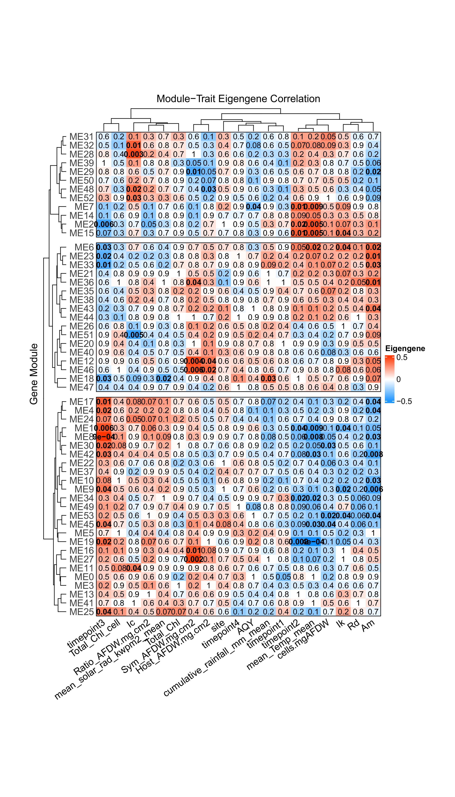

Working with the A. pulchra timeseries gene expression (RNA + sRNA) data from E5 Coral project.
Summary
I ran a Weighted Gene Correlation Network Analysis (WGCNA) with both gene and miRNA expression to a) group similarly-expressed sets of genes and/or miRNAs into “modules” of coexpression, and b) evaluate correlation of gene expression modules with different physiological and environmental variables.
Note that, unlike my original trials with WGCNA, I variance stabilized the gene counts and miRNA counts separately this time, after talking w Ariana about how to prep data appropriately. This didn’t have a huge impact on overall trends (which were already driven by the genes, not miRNA), but it really impacted miRNA module placement. When I VST’d everything together almost all miRNA ended up placed in the same module, likely because all the miRNA have relatively low counts. After performing VST separately, WGCNA now places the miRNA across ~15 modules.

WGCNA identified a total of 54 modules of coexpressed genes/miRNA, 19 of which contain miRNA. Roughly half of the miRNA are contained within a single module, one of the larger modules that likely represents housekeeping function. The remaining miRNA are spread out, generally the only miRNA in their modules.

In the above interaction network plot, each module is shown as a node. Modules that contain miRNA are black nodes, while gene-only modules are in grey. A line between two modules indicates the module eigengenes are significantly correlated, with a correlation coefficient magnitude of at least 0.7. Blue shading indicates positive correlation and red indicates negative correlation.
To look for potential miRNA-target mRNA interactions we’re looking for negative correlations where at least one module contains miRNA. I count roughly 20 of these!

Ran correlation of modules with physiological and environmental variables, and some interesting stuff popped out! Interestingly, timepoints 2 and 3 have significantly correlated modules, but timepoints 1 and 4 don’t. This suggests the influence of timepoint stems largely from the temperature conditions, since a) timepoints 2 and 3 have the most “extreme” temperatures (in comparison to annual mean), and b) many of their correlated modules are also significantly correlated with temperature. Interestingly, timepoints 2 and 3 (March and September 2020) are actually extreme in opposite directions. March 2020 was the warmest timepoint and September was the coolest. If the two are correlated with very similar sets of gene modules, that suggests very similar expression pathways are used in response to both heat stress and cold stress in A.pulchra!

We can also plot out the eigengene expression of modules of interest across variables. Above are all the modules significantly correlated withe temperature, plotted across standardized temperature.
Update 03/18/2025:
After plotting eigengene expression for modules significantly correlated with timepoints 2 and 3 (there are no modules significantly correlated with timepoints 1 and 4), something else pops out. First, TP3 is significantly correlated with many more modules than TP2 (15 vs. 6). Second, several of these overlap and show matching expression profiles. Modules 1, 2, and 19 are significantly correlated with both TP2 and TP3, indicating significant differential expression when comparing TP2 to all other seasons and when comparing TP3 to all other seasons. Additionally, Modules 1, 2, and 19 are upregulated, downregulated, and upregulated, respectively, for both TP2 and TP3. See plots below:


I’ve also plotted the eigengene expression of modules significantly correlated with our other two environmental variables, solar radiation and rainfall. Interestingly, Module 18 is the only significantly correlated module for both solar radiation and rainfall, but shows inverse patterns of eigengene expression for the two. Module 18 is also one of the modules significantly correlated with TP3. Notably, both solar radiation and rainfall hit “extremes” at TP3 (TP3 represents both the maximum recorded solar radiation and minimum recorded rainfall of our 4 timepoints). See plots below:


Code:
Running Weighted Gene Correlation Network Analysis (WGCNA) to assess patterns of miRNA-mRNA coexpression in A.pulchra.
1 Install and load packages
library(tidyverse) library(ggplot2) library(WGCNA) library(magrittr) library(genefilter) library(DESeq2) library(ggfortify) library(RColorBrewer) library(pheatmap) library(factoextra) library(vegan) library(dendsort) library(ComplexHeatmap) library(psych) library(igraph) library(ggraph)2 Load and prep data
Load in count matrices for RNAseq.
# raw gene counts data (will filter and variance stabilize) Apul_genes <- read_csv("../output/02.20-D-Apul-RNAseq-alignment-HiSat2/apul-gene_count_matrix.csv") Apul_genes <- as.data.frame(Apul_genes) # format gene IDs as rownames (instead of a column) rownames(Apul_genes) <- Apul_genes$gene_id Apul_genes <- Apul_genes%>%select(!gene_id) # load and format metadata metadata <- read_csv("../../M-multi-species/data/rna_metadata.csv")%>%select(AzentaSampleName, ColonyID, Timepoint)%>% filter(grepl("ACR", ColonyID)) metadata$Sample <- paste(metadata$AzentaSampleName, metadata$ColonyID, metadata$Timepoint, sep = "_") colonies <- unique(metadata$ColonyID) # Load physiological data phys<-read_csv("https://github.com/urol-e5/timeseries/raw/refs/heads/master/time_series_analysis/Output/master_timeseries.csv")%>%filter(colony_id_corr %in% colonies)%>% select(colony_id_corr, species, timepoint, site, Host_AFDW.mg.cm2, Sym_AFDW.mg.cm2, Am, AQY, Rd, Ik, Ic, calc.umol.cm2.hr, cells.mgAFDW, prot_mg.mgafdw, Ratio_AFDW.mg.cm2, Total_Chl, Total_Chl_cell, cre.umol.mgafdw) # format timepoint phys$timepoint <- gsub("timepoint", "TP", phys$timepoint) #add column with full sample info phys <- merge(phys, metadata, by.x = c("colony_id_corr", "timepoint"), by.y = c("ColonyID", "Timepoint")) %>% select(-AzentaSampleName) #add site information into metadata metadata$Site<-phys$site[match(metadata$ColonyID, phys$colony_id_corr)] # Rename gene column names to include full sample info (as in miRNA table) colnames(Apul_genes) <- metadata$Sample[match(colnames(Apul_genes), metadata$AzentaSampleName)] # raw miRNA counts (will filter and variance stabilize) Apul_miRNA <- read.table(file = "../output/03.10-D-Apul-sRNAseq-expression-DESeq2/Apul_miRNA_ShortStack_counts_formatted.txt", header = TRUE, sep = "\t", check.names = FALSE)Ensure there are no genes or miRNAs with 0 counts across all samples.
nrow(Apul_genes)[1] 44371 Apul_genes<-Apul_genes %>% mutate(Total = rowSums(.[, 1:40]))%>% filter(!Total==0)%>% dplyr::select(!Total) nrow(Apul_genes)[1] 35869 # miRNAs nrow(Apul_miRNA)[1] 51 Apul_miRNA<-Apul_miRNA %>% mutate(Total = rowSums(.[, 1:40]))%>% filter(!Total==0)%>% dplyr::select(!Total) nrow(Apul_miRNA)[1] 51 Removing genes with only 0 counts reduced number from 44371 to 35869. Retained all 51 miRNAs.
2.1 Physiology filtering
Run PCA on physiology data to see if there are phys outliers
Export data for PERMANOVA test.
test<-as.data.frame(phys) test<-test[complete.cases(test), ]Build PERMANOVA model.
scaled_test <-prcomp(test%>%select(where(is.numeric)), scale=TRUE, center=TRUE) fviz_eig(scaled_test)# scale data vegan <- scale(test%>%select(where(is.numeric))) # PerMANOVA permanova<-adonis2(vegan ~ timepoint*site, data = test, method='eu') permanovaPermutation test for adonis under reduced model Permutation: free Number of permutations: 999 adonis2(formula = vegan ~ timepoint * site, data = test, method = "eu") Df SumOfSqs R2 F Pr(>F) Model 7 208.16 0.43731 2.9976 0.001 *** Residual 27 267.84 0.56269 Total 34 476.00 1.00000 --- Signif. codes: 0 '***' 0.001 '**' 0.01 '*' 0.05 '.' 0.1 ' ' 1 pca1<-ggplot2::autoplot(scaled_test, data=test, frame.colour="timepoint", loadings=FALSE, colour="timepoint", shape="site", loadings.label.colour="black", loadings.colour="black", loadings.label=FALSE, frame=FALSE, loadings.label.size=5, loadings.label.vjust=-1, size=5) + geom_text(aes(x = PC1, y = PC2, label = paste(colony_id_corr, timepoint)), vjust = -0.5)+ theme_classic()+ theme(legend.text = element_text(size=18), legend.position="right", plot.background = element_blank(), legend.title = element_text(size=18, face="bold"), axis.text = element_text(size=18), axis.title = element_text(size=18, face="bold"));pca1Remove ACR-173, timepoint 3 sample from analysis. This is Azenta sample 1B2.
Apul_genes <- Apul_genes%>% select(!`1B2_ACR-173_TP3`) Apul_miRNA <- Apul_miRNA%>% select(!`1B2_ACR-173_TP3`) metadata <- metadata %>% filter(Sample != "1B2_ACR-173_TP3")We also do not have phys data for colony 1B9 ACR-265 at TP4, so I'll remove that here as well.
Apul_genes <- Apul_genes%>% select(!`1B9_ACR-265_TP4`) Apul_miRNA <- Apul_miRNA%>% select(!`1B9_ACR-265_TP4`) metadata <- metadata %>% filter(Sample != "1B9_ACR-265_TP4")2.2 pOverA filtering
pOverA: Specifying the minimum count for a proportion of samples for each gene. Here, we are using a pOverA of 0.1. This is because we have 40 samples with a minimum of n=4 samples per timepoint per site. Therefore, we will accept genes that are present in 4/40 = 0.1 of the samples because we expect different expression by life stage. We are further setting the minimum count of genes and miRNA to 10, such that 12.5% of the samples must have a gene count of >10 in order for the gene to remain in the data set.
Filter in the package "genefilter". Pre-filtering our dataset to reduce the memory size dataframe, increase the speed of the transformation and testing functions, and improve quality of statistical analysis by removing low-coverage counts. Removed counts could represent outliers in the data and removing these improves sensitivity of statistical tests.
genes:
filt <- filterfun(pOverA(0.1,10)) #create filter for the counts data gfilt <- genefilter(Apul_genes, filt) #identify genes to keep by count filter gkeep <- Apul_genes[gfilt,] #identify genes to keep by count filter gkeep <- Apul_genes[gfilt,] #identify gene lists gn.keep <- rownames(gkeep) #gene count data filtered in PoverA, P percent of the samples have counts over A Apul_genes_filt <- as.data.frame(Apul_genes[which(rownames(Apul_genes) %in% gn.keep),]) #How many rows do we have before and after filtering? nrow(Apul_genes) #Before[1] 35869 nrow(Apul_genes_filt) #After[1] 23459 We had 35869 genes before, and 23459 genes after filtering.
miRNA:
mifilt <- filterfun(pOverA(0.1,10)) #create filter for the counts data mifilt <- genefilter(Apul_miRNA, mifilt) #identify genes to keep by count filter mikeep <- Apul_miRNA[mifilt,] #identify genes to keep by count filter mikeep <- Apul_miRNA[mifilt,] #identify gene lists mi.keep <- rownames(mikeep) #gene count data filtered in PoverA, P percent of the samples have counts over A Apul_miRNA_filt <- as.data.frame(Apul_miRNA[which(rownames(Apul_miRNA) %in% mi.keep),]) #How many rows do we have before and after filtering? nrow(Apul_miRNA) #Before[1] 51 nrow(Apul_miRNA_filt) #After[1] 43 Of our original 51 miRNAs, 43 are retained.
2.3 Assign metadata and arrange order of columns
Order metadata the same as the column order in the gene matrix.
list<-colnames(Apul_genes_filt) list<-as.factor(list) metadata$Sample<-as.factor(metadata$Sample) # Re-order the levels metadata$Sample <- factor(as.character(metadata$Sample), levels=list) # Re-order the data.frame metadata_ordered <- metadata[order(metadata$Sample),] metadata_ordered$Sample [1] 1A1_ACR-173_TP1 1A10_ACR-145_TP4 1A12_ACR-237_TP3 1A2_ACR-244_TP4 [5] 1A8_ACR-186_TP2 1A9_ACR-244_TP2 1B1_ACR-225_TP3 1B10_ACR-150_TP4 [9] 1B5_ACR-229_TP1 1C10_ACR-173_TP4 1C4_ACR-139_TP4 1D10_ACR-265_TP2 [13] 1D3_ACR-225_TP4 1D4_ACR-237_TP4 1D6_ACR-229_TP2 1D8_ACR-237_TP2 [17] 1D9_ACR-229_TP4 1E1_ACR-265_TP3 1E3_ACR-150_TP2 1E5_ACR-139_TP3 [21] 1E9_ACR-237_TP1 1F11_ACR-173_TP2 1F4_ACR-150_TP3 1F8_ACR-145_TP3 [25] 1G5_ACR-244_TP3 1H11_ACR-225_TP1 1H12_ACR-186_TP3 1H6_ACR-225_TP2 [29] 1H7_ACR-229_TP3 1H8_ACR-186_TP4 2B2_ACR-145_TP1 2B3_ACR-139_TP2 [33] 2C1_ACR-244_TP1 2C2_ACR-139_TP1 2D2_ACR-150_TP1 2E2_ACR-186_TP1 [37] 2F1_ACR-265_TP1 2G1_ACR-145_TP2 38 Levels: 1A1_ACR-173_TP1 1A10_ACR-145_TP4 ... 2G1_ACR-145_TP2 # Make sure the miRNA colnames are also in the same order as the gene colnames Apul_miRNA_filt <- Apul_miRNA_filt[, colnames(Apul_genes_filt)]Metadata and gene count matrix are now ordered the same.
2.4 Conduct variance stabilized transformation
VST should be performed on our two input datasets (gene counts and miRNA counts) separately
2.4.1 Genes:
#Set DESeq2 design dds_genes <- DESeqDataSetFromMatrix(countData = Apul_genes_filt, colData = metadata_ordered, design = ~Timepoint+ColonyID)Check size factors.
SF.dds_genes <- estimateSizeFactors(dds_genes) #estimate size factors to determine if we can use vst to transform our data. Size factors should be less than 4 for us to use vst print(sizeFactors(SF.dds_genes)) #View size factors 1A1_ACR-173_TP1 1A10_ACR-145_TP4 1A12_ACR-237_TP3 1A2_ACR-244_TP4 0.7568024 0.7696399 1.4231584 0.6405377 1A8_ACR-186_TP2 1A9_ACR-244_TP2 1B1_ACR-225_TP3 1B10_ACR-150_TP4 1.1211635 1.2042163 1.4204528 1.4016702 1B5_ACR-229_TP1 1C10_ACR-173_TP4 1C4_ACR-139_TP4 1D10_ACR-265_TP2 1.6052144 0.7137948 1.1899017 1.1365146 1D3_ACR-225_TP4 1D4_ACR-237_TP4 1D6_ACR-229_TP2 1D8_ACR-237_TP2 0.6729713 1.0536139 1.0899755 0.8696891 1D9_ACR-229_TP4 1E1_ACR-265_TP3 1E3_ACR-150_TP2 1E5_ACR-139_TP3 0.6693270 1.0722064 1.1788615 1.2212146 1E9_ACR-237_TP1 1F11_ACR-173_TP2 1F4_ACR-150_TP3 1F8_ACR-145_TP3 1.0404211 1.0438667 1.4019603 0.7945692 1G5_ACR-244_TP3 1H11_ACR-225_TP1 1H12_ACR-186_TP3 1H6_ACR-225_TP2 1.6112366 1.4231584 0.6115323 0.7945692 1H7_ACR-229_TP3 1H8_ACR-186_TP4 2B2_ACR-145_TP1 2B3_ACR-139_TP2 1.3289756 1.2189223 1.1023879 1.4414683 2C1_ACR-244_TP1 2C2_ACR-139_TP1 2D2_ACR-150_TP1 2E2_ACR-186_TP1 0.6642454 1.1948320 0.7798443 0.6226576 2F1_ACR-265_TP1 2G1_ACR-145_TP2 0.9539809 0.8200694 all(sizeFactors(SF.dds_genes)) < 4[1] TRUE All size factors are less than 4, so we can use VST transformation.
vsd_genes <- vst(dds_genes, blind=FALSE) #apply a variance stabilizing transformation to minimize effects of small counts and normalize with respect to library size head(assay(vsd_genes), 3) #view transformed gene count data for the first three genes in the dataset. 1A1_ACR-173_TP1 1A10_ACR-145_TP4 1A12_ACR-237_TP3 1A2_ACR-244_TP4 FUN_002326 6.660702 6.601151 6.296062 6.022911 FUN_002303 7.454351 7.019662 6.664320 6.169453 FUN_002305 7.454351 7.036585 6.800146 6.102559 1A8_ACR-186_TP2 1A9_ACR-244_TP2 1B1_ACR-225_TP3 1B10_ACR-150_TP4 FUN_002326 5.936082 5.926631 6.318421 6.254378 FUN_002303 5.996527 6.034064 6.665234 6.541184 FUN_002305 6.092074 6.077224 6.801173 6.736355 1B5_ACR-229_TP1 1C10_ACR-173_TP4 1C4_ACR-139_TP4 1D10_ACR-265_TP2 FUN_002326 5.825783 6.607816 5.928189 6.232170 FUN_002303 5.942425 7.032182 6.277071 6.617129 FUN_002305 5.891826 6.976191 6.277071 6.834957 1D3_ACR-225_TP4 1D4_ACR-237_TP4 1D6_ACR-229_TP2 1D8_ACR-237_TP2 FUN_002326 6.474013 6.576064 5.859845 6.439541 FUN_002303 6.718366 6.946757 5.939907 6.842014 FUN_002305 6.818777 7.072513 6.001201 7.109262 1D9_ACR-229_TP4 1E1_ACR-265_TP3 1E3_ACR-150_TP2 1E5_ACR-139_TP3 FUN_002326 5.913234 6.142834 5.929410 5.982758 FUN_002303 5.666063 6.527629 6.120940 6.212425 FUN_002305 5.913234 6.696940 6.190595 6.321001 1E9_ACR-237_TP1 1F11_ACR-173_TP2 1F4_ACR-150_TP3 1F8_ACR-145_TP3 FUN_002326 6.473872 6.187513 6.254318 6.341284 FUN_002303 6.855660 6.538906 6.772955 6.685573 FUN_002305 6.870372 6.580167 6.927720 6.731014 1G5_ACR-244_TP3 1H11_ACR-225_TP1 1H12_ACR-186_TP3 1H6_ACR-225_TP2 FUN_002326 5.891405 6.296062 6.031232 6.341284 FUN_002303 6.167920 6.664320 6.112711 6.685573 FUN_002305 6.279189 6.800146 6.181130 6.731014 1H7_ACR-229_TP3 1H8_ACR-186_TP4 2B2_ACR-145_TP1 2B3_ACR-139_TP2 FUN_002326 5.841581 5.925058 6.300492 5.957649 FUN_002303 5.841581 6.148991 6.648931 6.077732 FUN_002305 5.914130 6.181995 6.666283 6.140886 2C1_ACR-244_TP1 2C2_ACR-139_TP1 2D2_ACR-150_TP1 2E2_ACR-186_TP1 FUN_002326 6.016517 5.986221 6.784206 6.027972 FUN_002303 6.094757 6.247838 7.044774 6.027972 FUN_002305 6.094757 6.275828 7.028204 6.108734 2F1_ACR-265_TP1 2G1_ACR-145_TP2 FUN_002326 6.555466 6.163523 FUN_002303 6.889927 6.670217 FUN_002305 6.889927 6.715029 2.4.1.1 PCA
Keep in mind this is of both the genes and miRNAs. since there are vastly more genes than miRNAs, the PCA will be dictated by genes. for miRNas alone, see 03.10.
plotPCA(vsd_genes, intgroup = c("ColonyID"))plotPCA(vsd_genes, intgroup = c("Timepoint"))2.4.1.2 Sample clustering
sampleDists_genes <- dist(t(assay(vsd_genes))) #calculate distance matrix sampleDistMatrix_genes <- as.matrix(sampleDists_genes) #distance matrix rownames(sampleDistMatrix_genes) <- colnames(vsd_genes) #assign row names colnames(sampleDistMatrix_genes) <- NULL #assign col names colors <- colorRampPalette( rev(brewer.pal(9, "Blues")) )(255) #assign colors pht_genes <- pheatmap(sampleDistMatrix_genes, #plot matrix clustering_distance_rows=sampleDists_genes, #cluster rows clustering_distance_cols=sampleDists_genes, #cluster columns col=colors) #set colors print(pht_genes)2.4.2 miRNA
#Set DESeq2 design dds_miRNA <- DESeqDataSetFromMatrix(countData = Apul_miRNA_filt, colData = metadata_ordered, design = ~Timepoint+ColonyID)Check size factors.
SF.dds_miRNA <- estimateSizeFactors(dds_miRNA) #estimate size factors to determine if we can use vst to transform our data. Size factors should be less than 4 for us to use vst print(sizeFactors(SF.dds_miRNA)) #View size factors 1A1_ACR-173_TP1 1A10_ACR-145_TP4 1A12_ACR-237_TP3 1A2_ACR-244_TP4 1.4375773 0.4873497 1.1278371 1.3906883 1A8_ACR-186_TP2 1A9_ACR-244_TP2 1B1_ACR-225_TP3 1B10_ACR-150_TP4 1.4576506 3.6175606 0.6314484 0.5933158 1B5_ACR-229_TP1 1C10_ACR-173_TP4 1C4_ACR-139_TP4 1D10_ACR-265_TP2 3.4568168 0.3494818 0.2635332 1.6883200 1D3_ACR-225_TP4 1D4_ACR-237_TP4 1D6_ACR-229_TP2 1D8_ACR-237_TP2 3.3510894 1.6862052 3.0187618 1.6095839 1D9_ACR-229_TP4 1E1_ACR-265_TP3 1E3_ACR-150_TP2 1E5_ACR-139_TP3 1.6452632 0.4710913 2.5273448 0.1018135 1E9_ACR-237_TP1 1F11_ACR-173_TP2 1F4_ACR-150_TP3 1F8_ACR-145_TP3 0.8833733 1.4438548 1.9140909 0.3982620 1G5_ACR-244_TP3 1H11_ACR-225_TP1 1H12_ACR-186_TP3 1H6_ACR-225_TP2 2.2537502 0.8044495 0.4593767 1.8545938 1H7_ACR-229_TP3 1H8_ACR-186_TP4 2B2_ACR-145_TP1 2B3_ACR-139_TP2 1.0932705 0.8296064 0.8877596 1.8683207 2C1_ACR-244_TP1 2C2_ACR-139_TP1 2D2_ACR-150_TP1 2E2_ACR-186_TP1 1.1967504 1.3986634 0.5117454 0.3091478 2F1_ACR-265_TP1 2G1_ACR-145_TP2 0.2926522 1.8710888 all(sizeFactors(SF.dds_miRNA)) < 4[1] TRUE All size factors are less than 4, so we can use VST transformation.
vsd_miRNA <- varianceStabilizingTransformation(dds_miRNA, blind=FALSE) #apply a variance stabilizing transformation to minimize effects of small counts and normalize with respect to library size. Using varianceStabilizingTransformation() instead of vst() because few input genes head(assay(vsd_miRNA), 3) #view transformed gene count data for the first three genes in the dataset. 1A1_ACR-173_TP1 1A10_ACR-145_TP4 1A12_ACR-237_TP3 1A2_ACR-244_TP4 Cluster_1819 6.478249 6.557331 5.595735 6.196669 Cluster_1832 10.332441 9.422019 8.660731 9.451348 Cluster_1833 5.492142 5.650442 5.997705 5.263138 1A8_ACR-186_TP2 1A9_ACR-244_TP2 1B1_ACR-225_TP3 1B10_ACR-150_TP4 Cluster_1819 6.241157 6.812541 5.566107 5.341800 Cluster_1832 9.762292 9.276238 9.872929 8.600338 Cluster_1833 4.193715 3.266091 5.918124 4.687096 1B5_ACR-229_TP1 1C10_ACR-173_TP4 1C4_ACR-139_TP4 1D10_ACR-265_TP2 Cluster_1819 6.267787 6.117117 5.794925 6.226234 Cluster_1832 10.028421 9.433650 9.679103 8.588882 Cluster_1833 5.898084 4.582708 6.070238 3.266091 1D3_ACR-225_TP4 1D4_ACR-237_TP4 1D6_ACR-229_TP2 1D8_ACR-237_TP2 Cluster_1819 5.185576 5.368613 6.370127 6.091856 Cluster_1832 9.787300 9.226621 9.904788 8.713369 Cluster_1833 5.374313 6.204218 4.675660 5.725310 1D9_ACR-229_TP4 1E1_ACR-265_TP3 1E3_ACR-150_TP2 1E5_ACR-139_TP3 Cluster_1819 5.851833 5.857390 6.463126 5.183387 Cluster_1832 9.423066 9.183896 9.086751 8.848700 Cluster_1833 4.485634 5.961931 3.266091 3.266091 1E9_ACR-237_TP1 1F11_ACR-173_TP2 1F4_ACR-150_TP3 1F8_ACR-145_TP3 Cluster_1819 5.260586 6.304098 5.539388 6.243558 Cluster_1832 8.430433 10.072455 8.695247 9.120002 Cluster_1833 5.260586 5.047177 4.401214 5.091836 1G5_ACR-244_TP3 1H11_ACR-225_TP1 1H12_ACR-186_TP3 1H6_ACR-225_TP2 Cluster_1819 5.903188 5.294944 6.492645 5.406006 Cluster_1832 10.274857 9.602521 9.928946 9.881625 Cluster_1833 3.266091 5.388645 5.354900 5.218993 1H7_ACR-229_TP3 1H8_ACR-186_TP4 2B2_ACR-145_TP1 2B3_ACR-139_TP2 Cluster_1819 5.989093 5.677605 6.075343 5.752765 Cluster_1832 9.561175 10.065363 8.130532 9.915856 Cluster_1833 4.683765 6.098376 3.266091 4.655510 2C1_ACR-244_TP1 2C2_ACR-139_TP1 2D2_ACR-150_TP1 2E2_ACR-186_TP1 Cluster_1819 6.032448 5.734740 5.923774 6.583587 Cluster_1832 9.404192 9.672986 8.230369 9.454567 Cluster_1833 5.955020 5.072513 4.526078 3.266091 2F1_ACR-265_TP1 2G1_ACR-145_TP2 Cluster_1819 6.182672 5.659509 Cluster_1832 9.236968 9.156409 Cluster_1833 3.266091 4.937878 2.4.2.1 PCA
Keep in mind this is of both the genes and miRNAs. since there are vastly more genes than miRNAs, the PCA will be dictated by genes. for miRNas alone, see 03.10.
plotPCA(vsd_miRNA, intgroup = c("ColonyID"))plotPCA(vsd_miRNA, intgroup = c("Timepoint"))2.4.2.2 Sample clustering
sampleDists_miRNA <- dist(t(assay(vsd_miRNA))) #calculate distance matrix sampleDistMatrix_miRNA <- as.matrix(sampleDists_miRNA) #distance matrix rownames(sampleDistMatrix_miRNA) <- colnames(vsd_miRNA) #assign row names colnames(sampleDistMatrix_miRNA) <- NULL #assign col names colors <- colorRampPalette( rev(brewer.pal(9, "Blues")) )(255) #assign colors pht_miRNA <- pheatmap(sampleDistMatrix_miRNA, #plot matrix clustering_distance_rows=sampleDists_miRNA, #cluster rows clustering_distance_cols=sampleDists_miRNA, #cluster columns col=colors) #set colors print(pht_miRNA)2.5 Combine counts data
# Extract variance stabilized counts as dataframes datExpr_genes <- as.data.frame(t(assay(vsd_genes))) datExpr_miRNA <- as.data.frame(t(assay(vsd_miRNA))) # Double check the row names (sample names) are in same order rownames(datExpr_genes) == rownames(datExpr_miRNA) [1] TRUE TRUE TRUE TRUE TRUE TRUE TRUE TRUE TRUE TRUE TRUE TRUE TRUE TRUE TRUE [16] TRUE TRUE TRUE TRUE TRUE TRUE TRUE TRUE TRUE TRUE TRUE TRUE TRUE TRUE TRUE [31] TRUE TRUE TRUE TRUE TRUE TRUE TRUE TRUE # Combine vst gene counts and vst miRNA counts by rows (sample names) datExpr <- cbind(datExpr_genes, datExpr_miRNA)3 Outlier checks
Look for outliers by examining tree of samples
sampleTree = hclust(dist(datExpr), method = "average"); plot(sampleTree, main = "Sample clustering to detect outliers: genes", sub="", xlab="", cex.lab = 1.5, cex.axis = 1.5, cex.main = 2)Soft threshold selection. The soft thresholding power (β) is the number to which the co-expression similarity is raised to calculate adjacency. The function pickSoftThreshold performs a network topology analysis. The user chooses a set of candidate powers, however the default parameters are suitable values.
allowWGCNAThreads()Allowing multi-threading with up to 48 threads. # # Choose a set of soft-thresholding powers powers <- c(seq(from = 1, to=19, by=2), c(21:30)) #Create a string of numbers from 1 through 10, and even numbers from 10 through 20 # # # Call the network topology analysis function sft <- pickSoftThreshold(datExpr, powerVector = powers, verbose = 5)pickSoftThreshold: will use block size 1903. pickSoftThreshold: calculating connectivity for given powers... ..working on genes 1 through 1903 of 23502 ..working on genes 1904 through 3806 of 23502 ..working on genes 3807 through 5709 of 23502 ..working on genes 5710 through 7612 of 23502 ..working on genes 7613 through 9515 of 23502 ..working on genes 9516 through 11418 of 23502 ..working on genes 11419 through 13321 of 23502 ..working on genes 13322 through 15224 of 23502 ..working on genes 15225 through 17127 of 23502 ..working on genes 17128 through 19030 of 23502 ..working on genes 19031 through 20933 of 23502 ..working on genes 20934 through 22836 of 23502 ..working on genes 22837 through 23502 of 23502 Power SFT.R.sq slope truncated.R.sq mean.k. median.k. max.k. 1 1 0.0168 0.36 0.769 5420.00 5.13e+03 9220 2 3 0.8790 -1.48 0.979 865.00 6.27e+02 3320 3 5 0.9670 -1.59 0.994 256.00 1.30e+02 1760 4 7 0.9780 -1.53 0.996 103.00 3.65e+01 1110 5 9 0.9810 -1.48 0.996 50.80 1.22e+01 775 6 11 0.9840 -1.43 0.995 28.40 4.66e+00 581 7 13 0.9830 -1.40 0.993 17.50 1.95e+00 455 8 15 0.9840 -1.37 0.991 11.50 8.88e-01 370 9 17 0.9840 -1.34 0.990 8.04 4.26e-01 308 10 19 0.9890 -1.32 0.993 5.85 2.13e-01 263 11 21 0.9920 -1.30 0.995 4.41 1.12e-01 228 12 22 0.9890 -1.30 0.991 3.87 8.14e-02 213 13 23 0.9880 -1.29 0.989 3.42 5.97e-02 200 14 24 0.9830 -1.29 0.985 3.04 4.39e-02 189 15 25 0.9750 -1.29 0.977 2.71 3.26e-02 178 16 26 0.9760 -1.28 0.978 2.44 2.44e-02 169 17 27 0.9780 -1.27 0.979 2.20 1.83e-02 160 18 28 0.9770 -1.26 0.979 1.99 1.39e-02 152 19 29 0.9740 -1.27 0.978 1.81 1.05e-02 145 20 30 0.9700 -1.26 0.974 1.66 8.01e-03 138 Plot the results.
sizeGrWindow(9, 5) par(mfrow = c(1,2)); cex1 = 0.9; # # # Scale-free topology fit index as a function of the soft-thresholding power plot(sft$fitIndices[,1], -sign(sft$fitIndices[,3])*sft$fitIndices[,2], xlab="Soft Threshold (power)",ylab="Scale Free Topology Model Fit,signed R^2",type="n", main = paste("Scale independence")); text(sft$fitIndices[,1], -sign(sft$fitIndices[,3])*sft$fitIndices[,2], labels=powers,cex=cex1,col="red"); # # # this line corresponds to using an R^2 cut-off abline(h=0.9,col="red") # # # Mean connectivity as a function of the soft-thresholding power plot(sft$fitIndices[,1], sft$fitIndices[,5], xlab="Soft Threshold (power)",ylab="Mean Connectivity", type="n", main = paste("Mean connectivity")) text(sft$fitIndices[,1], sft$fitIndices[,5], labels=powers, cex=cex1,col="red")I used a scale-free topology fit index R^2 of 0.9. The lowest recommended R^2 by Langfelder and Horvath is 0.8. I chose 0.9 because we want to use the smallest soft thresholding power that maximizes with model fit. It appears that our soft thresholding power is 5 because it is the lowest power above the R^2=0.9 threshold that maximizes with model fit. I will use a signed network.
4 WGCNA
Now we're ready to run WGCNA!
picked_power = 5 temp_cor <- cor cor <- WGCNA::cor # Force it to use WGCNA cor function (fix a namespace conflict issue) netwk_Apul <- blockwiseModules(datExpr, # <= input here # == Adjacency Function == power = picked_power, # <= power here networkType = "signed", # == Tree and Block Options == deepSplit = 2, pamRespectsDendro = F, # detectCutHeight = 0.75, minModuleSize = 30, maxBlockSize = 5000, # == Module Adjustments == reassignThreshold = 1e-6, mergeCutHeight = 0.15, # == TOM == Archive the run results in TOM file (saves time) saveTOMs = F, saveTOMFileBase = "ER", # == Output Options numericLabels = T, verbose = 3) Calculating module eigengenes block-wise from all genes Flagging genes and samples with too many missing values... ..step 1 ....pre-clustering genes to determine blocks.. Projective K-means: ..k-means clustering.. ..merging smaller clusters... Block sizes: gBlocks 1 2 3 4 5 4996 4903 4664 4478 4461 ..Working on block 1 . TOM calculation: adjacency.. ..will use 48 parallel threads. Fraction of slow calculations: 0.000000 ..connectivity.. ..matrix multiplication (system BLAS).. ..normalization.. ..done. ....clustering.. ....detecting modules.. ....calculating module eigengenes.. ....checking kME in modules.. ..removing 24 genes from module 1 because their KME is too low. ..removing 16 genes from module 2 because their KME is too low. ..Working on block 2 . TOM calculation: adjacency.. ..will use 48 parallel threads. Fraction of slow calculations: 0.000000 ..connectivity.. ..matrix multiplication (system BLAS).. ..normalization.. ..done. ....clustering.. ....detecting modules.. ....calculating module eigengenes.. ....checking kME in modules.. ..removing 245 genes from module 1 because their KME is too low. ..removing 126 genes from module 2 because their KME is too low. ..removing 14 genes from module 3 because their KME is too low. ..removing 9 genes from module 4 because their KME is too low. ..removing 3 genes from module 5 because their KME is too low. ..removing 21 genes from module 8 because their KME is too low. ..removing 12 genes from module 9 because their KME is too low. ..removing 9 genes from module 10 because their KME is too low. ..removing 12 genes from module 11 because their KME is too low. ..removing 2 genes from module 12 because their KME is too low. ..removing 3 genes from module 14 because their KME is too low. ..removing 1 genes from module 16 because their KME is too low. ..removing 1 genes from module 17 because their KME is too low. ..removing 1 genes from module 18 because their KME is too low. ..Working on block 3 . TOM calculation: adjacency.. ..will use 48 parallel threads. Fraction of slow calculations: 0.000000 ..connectivity.. ..matrix multiplication (system BLAS).. ..normalization.. ..done. ....clustering.. ....detecting modules.. ....calculating module eigengenes.. ....checking kME in modules.. ..removing 200 genes from module 1 because their KME is too low. ..removing 174 genes from module 2 because their KME is too low. ..removing 95 genes from module 3 because their KME is too low. ..removing 31 genes from module 4 because their KME is too low. ..removing 2 genes from module 5 because their KME is too low. ..removing 36 genes from module 7 because their KME is too low. ..removing 7 genes from module 8 because their KME is too low. ..removing 4 genes from module 11 because their KME is too low. ..removing 13 genes from module 12 because their KME is too low. ..removing 3 genes from module 15 because their KME is too low. ..Working on block 4 . TOM calculation: adjacency.. ..will use 48 parallel threads. Fraction of slow calculations: 0.000000 ..connectivity.. ..matrix multiplication (system BLAS).. ..normalization.. ..done. ....clustering.. ....detecting modules.. ....calculating module eigengenes.. ....checking kME in modules.. ..removing 152 genes from module 1 because their KME is too low. ..removing 106 genes from module 2 because their KME is too low. ..removing 81 genes from module 3 because their KME is too low. ..removing 82 genes from module 4 because their KME is too low. ..removing 9 genes from module 5 because their KME is too low. ..removing 5 genes from module 6 because their KME is too low. ..Working on block 5 . TOM calculation: adjacency.. ..will use 48 parallel threads. Fraction of slow calculations: 0.000000 ..connectivity.. ..matrix multiplication (system BLAS).. ..normalization.. ..done. ....clustering.. ....detecting modules.. ....calculating module eigengenes.. ....checking kME in modules.. ..removing 297 genes from module 1 because their KME is too low. ..removing 60 genes from module 2 because their KME is too low. ..removing 38 genes from module 3 because their KME is too low. ..removing 31 genes from module 4 because their KME is too low. ..reassigning 40 genes from module 1 to modules with higher KME. ..reassigning 27 genes from module 2 to modules with higher KME. ..reassigning 3 genes from module 3 to modules with higher KME. ..reassigning 2 genes from module 4 to modules with higher KME. ..reassigning 4 genes from module 5 to modules with higher KME. ..reassigning 3 genes from module 7 to modules with higher KME. ..reassigning 1 genes from module 10 to modules with higher KME. ..reassigning 1 genes from module 13 to modules with higher KME. ..reassigning 1 genes from module 14 to modules with higher KME. ..reassigning 7 genes from module 23 to modules with higher KME. ..reassigning 1 genes from module 24 to modules with higher KME. ..reassigning 2 genes from module 25 to modules with higher KME. ..reassigning 1 genes from module 28 to modules with higher KME. ..reassigning 1 genes from module 29 to modules with higher KME. ..reassigning 1 genes from module 30 to modules with higher KME. ..reassigning 1 genes from module 31 to modules with higher KME. ..reassigning 1 genes from module 36 to modules with higher KME. ..reassigning 5 genes from module 43 to modules with higher KME. ..reassigning 11 genes from module 44 to modules with higher KME. ..reassigning 1 genes from module 45 to modules with higher KME. ..reassigning 2 genes from module 46 to modules with higher KME. ..reassigning 1 genes from module 48 to modules with higher KME. ..reassigning 11 genes from module 50 to modules with higher KME. ..reassigning 8 genes from module 51 to modules with higher KME. ..reassigning 1 genes from module 53 to modules with higher KME. ..merging modules that are too close.. mergeCloseModules: Merging modules whose distance is less than 0.15 Calculating new MEs... cor <- temp_cor # Return cor function to original namespaceTake a look at dendrogram.
# Convert labels to colors for plotting mergedColors = labels2colors(netwk_Apul$colors) labels = table(netwk_Apul$colors) labels 0 1 2 3 4 5 6 7 8 9 10 11 12 13 14 15 1925 2949 1946 1754 1087 963 939 927 909 879 824 749 700 657 577 402 16 17 18 19 20 21 22 23 24 25 26 27 28 29 30 31 374 346 316 304 261 247 233 217 210 208 199 176 168 163 162 155 32 33 34 35 36 37 38 39 40 41 42 43 44 45 46 47 142 138 130 111 92 84 84 82 69 63 62 62 56 56 48 47 48 49 50 51 52 53 46 46 44 41 40 33 # Plot the dendrogram and the module colors underneath plotDendroAndColors( netwk_Apul$dendrograms[[1]], mergedColors[netwk_Apul$blockGenes[[1]]], "Module colors", dendroLabels = FALSE, hang = 0.03, addGuide = TRUE, guideHang = 0.05 )Show module number before and after merging.
length(table(netwk_Apul$unmergedColors))[1] 56 length(table(netwk_Apul$colors))[1] 54 There are 56 modules before merging to 85% similarity and 54 after.
MEs<-netwk_Apul$MEs moduleLabels<-netwk_Apul$colors moduleColors <- labels2colors(netwk_Apul$colors)# Get Module Eigengenes per cluster # MEs0_Apul <- moduleEigengenes(datExpr, mergedColors)$eigengenes mME_Apul <- moduleEigengenes(datExpr, mergedColors)$eigengenes # Add treatment names # MEs0_Apul$sample = row.names(MEs0_Apul) mME_Apul$sample = row.names(mME_Apul) # Join metadata to add timepoint to mME_Apul mME_Apul <- mME_Apul %>% left_join(metadata, by = c("sample" = "Sample")) # Order samples by timepoint timepoint_order <- c("TP1", "TP2", "TP3", "TP4") # Specify the desired order of timepoints mME_Apul <- mME_Apul %>% mutate(sample = factor(sample, levels = metadata$Sample[order(match(metadata$Timepoint, timepoint_order))])) # Plot heatmap mME_Apul %>% pivot_longer(cols = -c(sample, Timepoint), # Ensure only eigengenes are reshaped names_to = "module", values_to = "value") %>% ggplot(., aes(x = sample, y = name, fill = value)) + geom_tile() + theme_bw() + scale_fill_gradient2( low = "blue", high = "red", mid = "white", midpoint = 0, limit = c(-1,1) ) + theme(axis.text.x = element_text(angle = 90)) + labs(title = "Module-trait Relationships", y = "Modules", fill = "corr")5 Characterize gene/miRNA composition of modules
# Grab gene names and corresponding module colors module_info <- data.frame( gene = colnames(datExpr), module = moduleLabels ) #Add ME to all the names module_info$module <- paste0("ME", module_info$module) head(module_info) gene module FUN_002326 FUN_002326 ME20 FUN_002303 FUN_002303 ME20 FUN_002305 FUN_002305 ME20 FUN_002309 FUN_002309 ME20 FUN_002311 FUN_002311 ME20 FUN_002314 FUN_002314 ME20 # Function to calculate the proportion of mRNAs (genes with "FUN" in ID) calculate_mRNA_proportion <- function(genes) { total_genes <- length(genes) mRNA_count <- sum(grepl("FUN", genes)) # Proportion of mRNAs proportion_mRNA <- mRNA_count / total_genes return(proportion_mRNA) } # Since there are so few miRNA, it may be more appropriate to calculate # of miRNA contained in a given module calculate_miRNA_num <- function(genes) { total_genes <- length(genes) miRNA_count <- sum(grepl("Cluster", genes)) return(miRNA_count) } # Apply the functions to each module module_mRNA_proportion <- tapply(module_info$gene, module_info$module, calculate_mRNA_proportion) module_miRNA_count <- tapply(module_info$gene, module_info$module, calculate_miRNA_num) # View the proportions length(module_miRNA_count[module_miRNA_count > 0])[1] 19 module_miRNA_count ME0 ME1 ME10 ME11 ME12 ME13 ME14 ME15 ME16 ME17 ME18 ME19 ME2 ME20 ME21 ME22 18 2 2 0 1 0 3 0 0 0 0 1 0 1 0 0 ME23 ME24 ME25 ME26 ME27 ME28 ME29 ME3 ME30 ME31 ME32 ME33 ME34 ME35 ME36 ME37 1 0 1 0 0 1 1 1 2 3 0 0 0 1 0 0 ME38 ME39 ME4 ME40 ME41 ME42 ME43 ME44 ME45 ME46 ME47 ME48 ME49 ME5 ME50 ME51 0 0 0 1 0 0 0 0 0 0 0 0 0 1 0 0 ME52 ME53 ME6 ME7 ME8 ME9 0 0 1 1 0 0 19 of the 54 modules contain miRNA.
Module 0 contains almost half of the miRNA that were retained post-filtering (18/43). Keep in mind that the smaller the module number, the more genes it contains, so ME0 is one of the largest modules of coexpressed genes, and likely represents housekeeping function. It's thus not surprising that many miRNAs also grouped there!
The remaining 25 miRNA were quite spread out, most were the only miRNA in their module, with a handful of modules containing 2-3 coexpressed miRNA.
Plot
# Make df of module sizes module_sizes_df<-as.data.frame(labels) colnames(module_sizes_df) <- c("module", "size") module_sizes_df$module<-paste0("ME", module_sizes_df$module) # df of num. miRNA in each module module_miRNA_count_df <- as.data.frame(module_miRNA_count) module_miRNA_count_df$module <- rownames(module_miRNA_count_df) # Combine and add column for num of genes in each module module_composition <- left_join(module_sizes_df, module_miRNA_count_df, by="module") module_composition$module_gene_count <- module_composition$size - module_composition$module_miRNA_count # order by module size module_composition <- module_composition %>% arrange(desc(size)) %>% mutate(module = factor(module, levels = module)) # Convert to long format for stacking module_composition_long <- module_composition %>% pivot_longer(cols = c(module_gene_count, module_miRNA_count), names_to = "type", values_to = "count") %>% mutate(type = factor(type, levels = c("module_gene_count", "module_miRNA_count"))) # Order for stacking module_composition$type <- "" # Plot ggplot(module_composition_long, aes(x = module, y = count, fill = type)) + geom_bar(stat = "identity") + geom_text(data = module_composition, aes(x = module, y = size + 60, label = module_miRNA_count), size = 3) + # Label miRNA count scale_fill_manual(values = c("module_gene_count" = "steelblue", "module_miRNA_count" = "orange"), labels = c("Genes", "miRNAs")) + labs(x = "Module", y = "Total Module Size", title = "Stacked Barplot of Genes and miRNAs") + theme_minimal() + theme(axis.text.x = element_text(angle = 45, hjust = 1), legend.title = element_blank())Larger modules seem to be more likely to contain miRNA, which makes sense intuitively. However, the low number of total miRNA in comparison to the number of genes present means that miRNA don't make up an appreciable proportion of any module.
6 Correlate modules to each other
miRNAs are expected to either facilitate mRNA degradation or repress mRNA translation, both of which would result in a negative miRNA-mRNA relationship (more of an miRNA means less of its target mRNA(s)). WGCNA modules only group genes with similar expression patterns, so these inverse relationships would not be present within a single module. Instead, we need to find modules that are inversely related (have a strong, negative correlation).
Compute correlations between modules
- which correlation coefficient to use? I think WGCNA is based off of Pearson's correlation coefficient…
btwn_module_cor <- corr.test(MEs, method = "pearson", adjust = "BH") # Extract correlation values and p-values btwn_module_cor_matrix <- btwn_module_cor$r # Correlation coefficients btwn_module_p_matrix <- btwn_module_cor$p # Adjusted p-valuesConstruct network
# Set correlation and significance thresholds cor_threshold <- 0.7 # Adjust based on desired stringency p_threshold <- 0.05 # Convert correlation matrix into an edge list significant_edges <- which(abs(btwn_module_cor_matrix) > cor_threshold & btwn_module_p_matrix < p_threshold, arr.ind = TRUE) edge_list <- data.frame( module_A = rownames(btwn_module_cor_matrix)[significant_edges[,1]], module_B = colnames(btwn_module_cor_matrix)[significant_edges[,2]], correlation = btwn_module_cor_matrix[significant_edges] ) # Construct network graph network <- graph_from_data_frame(edge_list, directed = FALSE) # module_mRNA_proportion<-as.data.frame(module_mRNA_proportion) # # V(apul_network)$prop_mrna <- module_mRNA_proportion$module_mRNA_proportion[match(V(apul_network)$name, rownames(module_mRNA_proportion))] # Add miRNA presence/absence to the network nodes V(network)$has_miRNA <- ifelse( module_miRNA_count_df$module %in% V(network)$name & module_miRNA_count_df$module_miRNA_count > 0, "Yes", "No" )Plot
plot1<-ggraph(network, layout = "fr") + # Force-directed layout geom_edge_link(aes(edge_color = correlation), width = 2, show.legend = TRUE) + #geom_edge_link(aes(edge_alpha = correlation), show.legend = TRUE, width=2) + #geom_node_point(aes(colour=prop_mrna), size = 5) + #scale_colour_gradient(name="Prop. mRNA", low = "purple", high = "cyan3")+ geom_node_point(aes(color = has_miRNA), size = 3) + # Color nodes based on miRNA presence scale_edge_color_gradient2(low = "red", mid = "yellow", high = "blue", midpoint = 0, name = "Correlation") + scale_color_manual(values = c("Yes" = "black", "No" = "grey"), name = "miRNA Present") + geom_node_text(aes(label = name), repel = TRUE, size = 4) + theme_void() + labs(title = "A. pulchra mRNA-CpG Network");plot1Cool! In the above interaction network plot, each module is shown as a node. Modules that contain miRNA are black nodes, while gene-only modules are in grey. A line between two modules indicates the module eigengenes are significantly correlated, with a correlation coefficient magnitude of at least 0.7. Blue shading indicates positive correlation and red indicates negative correlation.
To look for potential miRNA-target mRNA interactions we're looking for negative correlations where at least one module contains miRNA. I count roughly 20 of these!
7 Correlate to traits
Ensure we've removed sample from expression data that is not present in physiological data. 1B9
phys<-phys%>% filter(!Sample=="1B2_ACR-173_TP3")%>% filter(!Sample=="1B9_ACR-265_TP4") setdiff(metadata_ordered$Sample, phys$Sample)character(0) #all have 38 observations Create a physiological/factor dataset with sample in rows and phys data in columns (row name = Azenta sample name)
# phys$AzentaSampleName<-metadata_ordered$AzentaSampleName[match(phys$Sample, metadata_ordered$Sample)] traits<-phys%>% select(Sample, timepoint, site, Host_AFDW.mg.cm2, Sym_AFDW.mg.cm2, Am, Rd, Ik, Ic, AQY, cells.mgAFDW, Total_Chl, Ratio_AFDW.mg.cm2, Total_Chl_cell) #time point #site traits<-traits%>% mutate(site=gsub("Mahana", "1", site)) %>% mutate(site=gsub("Manava", "2", site))%>% mutate(timepoint=gsub("TP", "", timepoint)) traits$timepoint<-as.numeric(traits$timepoint) traits$site<-as.numeric(traits$site) traits<-as.data.frame(traits) rownames(traits)<-traits$Sample datTraits<-traits%>%select(!Sample) #datTraits<-datTraits%>%select(!Timepoint)Add in temperature and light information for each time point from physiology manuscript. Note these have already been standardized for use in WGCNA.
env<-read_csv("https://github.com/urol-e5/timeseries/raw/refs/heads/master/time_series_analysis/Output/environment_characteristics_RDA.csv") %>% select(mean_Temp_mean, mean_solar_rad_kwpm2_mean, cumulative_rainfall_mm_mean, timepoint) %>% mutate(timepoint=if_else(timepoint=="timepoint1", "1", if_else(timepoint=="timepoint2", "2", if_else(timepoint=="timepoint3", "3", "4")))) %>% mutate(timepoint=as.numeric(timepoint)) #merge into datTraits datTraits<-left_join(datTraits, env) rownames(datTraits)<-traits$Sample str(datTraits)'data.frame': 38 obs. of 16 variables: $ timepoint : num 1 2 3 4 1 2 3 4 1 2 ... $ site : num 2 2 2 2 2 2 2 2 2 2 ... $ Host_AFDW.mg.cm2 : num 1.759 1.212 0.664 1.133 1.101 ... $ Sym_AFDW.mg.cm2 : num 0.795 0.545 0.493 0.538 0.312 ... $ Am : num 1.042 0.75 0.53 0.448 0.709 ... $ Rd : num 0.411 0.313 0.344 0.14 0.206 ... $ Ik : num 464 417 330 411 286 ... $ Ic : num 199.1 191.4 281 135 86.9 ... $ AQY : num 0.00225 0.0018 0.00161 0.00109 0.00248 ... $ cells.mgAFDW : num 357005 432917 398214 190625 622222 ... $ Total_Chl : num 3.03 1.391 2.295 0.683 2.729 ... $ Ratio_AFDW.mg.cm2 : num 0.311 0.31 0.426 0.322 0.221 ... $ Total_Chl_cell : num 8.49e-06 3.21e-06 5.76e-06 3.58e-06 4.39e-06 ... $ mean_Temp_mean : num -0.217 1.431 -0.898 -0.316 -0.217 ... $ mean_solar_rad_kwpm2_mean : num -0.14 0.36 1.08 -1.3 -0.14 ... $ cumulative_rainfall_mm_mean: num 0.665 -0.517 -1.142 0.993 0.665 ... Finally, we want to identify modules that are significantly correlated with timepoint. Since correlation analysis wouldn't identify non-linear relationships, we need to encode timepoint as 4 separate binomial variables (timepoint1 – yes/no?, timepoint2 – yes/no?, etc.)
datTraits <- datTraits %>% mutate( timepoint1 = as.integer(timepoint == 1), timepoint2 = as.integer(timepoint == 2), timepoint3 = as.integer(timepoint == 3), timepoint4 = as.integer(timepoint == 4) ) %>% select(!timepoint)nGenes = ncol(datExpr) nSamples = nrow(datExpr) nGenes[1] 23502 nSamples[1] 38 Generate labels for module eigengenes as numbers.
MEs0 = moduleEigengenes(datExpr, moduleLabels, softPower=5)$eigengenes # Reorder the eigengenes so that similar ones are adjacent MEs = orderMEs(MEs0) names(MEs) [1] "ME6" "ME18" "ME33" "ME35" "ME38" "ME43" "ME12" "ME26" "ME13" "ME7" [11] "ME14" "ME2" "ME23" "ME36" "ME15" "ME21" "ME51" "ME46" "ME0" "ME20" [21] "ME47" "ME41" "ME44" "ME11" "ME16" "ME25" "ME34" "ME49" "ME39" "ME48" [31] "ME52" "ME50" "ME31" "ME28" "ME32" "ME40" "ME53" "ME3" "ME5" "ME19" [41] "ME27" "ME45" "ME22" "ME30" "ME29" "ME37" "ME24" "ME1" "ME17" "ME4" [51] "ME10" "ME42" "ME8" "ME9" Correlations of traits with eigengenes
moduleTraitCor = cor(MEs, datTraits, use = "p"); moduleTraitPvalue = corPvalueStudent(moduleTraitCor, nSamples); Colors=sub("ME","", names(MEs)) moduleTraitTree = hclust(dist(t(moduleTraitCor)), method = "average") # pdf(file="D-Apul/output/11.00-Apul-WGCNA/ModuleTraitClusterTree.pdf") plot(moduleTraitTree)# dev.off()Correlations of genes with eigengenes. Calculate correlations between ME's and physiology/environmental variables.
moduleGeneCor=cor(MEs,datExpr) moduleGenePvalue = corPvalueStudent(moduleGeneCor, nSamples);Calculate kME values (module membership).
datKME = signedKME(datExpr, MEs, outputColumnName = "kME") head(datKME) kME6 kME18 kME33 kME35 kME38 kME43 FUN_002326 0.2583283 0.2156291 -0.1570120 -0.5612523 -0.12338187 0.10258740 FUN_002303 0.2132901 0.1511132 -0.2780998 -0.5391163 -0.07989391 0.04627133 FUN_002305 0.1773465 0.1530036 -0.3030477 -0.5807210 -0.12928937 0.05034717 FUN_002309 0.1884754 0.1696723 -0.2955877 -0.5769509 -0.12509871 0.04849489 FUN_002311 0.1770234 0.1320371 -0.3262569 -0.5604463 -0.11152639 0.07847327 FUN_002314 0.2249291 0.1980589 -0.2499234 -0.5998821 -0.14861215 0.05851233 kME12 kME26 kME13 kME7 kME14 kME2 FUN_002326 0.1174550 0.009270817 0.2312550 0.135998381 0.31371919 0.3990954 FUN_002303 0.2039570 0.014172902 0.2212095 0.024377196 0.13838471 0.1997507 FUN_002305 0.2033153 0.047296772 0.1240672 0.015050330 0.07661177 0.1377189 FUN_002309 0.1975374 0.044314259 0.1373691 0.019421357 0.08434848 0.1535856 FUN_002311 0.2349518 0.042425406 0.1202533 -0.006970714 0.04975190 0.1069415 FUN_002314 0.1515615 0.012431873 0.2172321 0.085028079 0.20448014 0.2812469 kME23 kME36 kME15 kME21 kME51 kME46 FUN_002326 0.3905361 0.1691093 0.24286457 0.2051058 0.1566690 0.4614680 FUN_002303 0.2417195 0.2336136 0.14542781 0.1991871 0.1154859 0.4628273 FUN_002305 0.1877159 0.1888757 0.10044193 0.1433232 0.1717918 0.4075874 FUN_002309 0.1976843 0.1629258 0.08986570 0.1185655 0.1579065 0.4188753 FUN_002311 0.1696208 0.2059308 0.08885847 0.1383213 0.1684262 0.3996114 FUN_002314 0.2948833 0.1861392 0.18195855 0.1875840 0.1849925 0.4642949 kME0 kME20 kME47 kME41 kME44 kME11 FUN_002326 0.4630721 0.9248177 -0.5293279 -0.5666736 -0.3735003 0.2630204 FUN_002303 0.5703850 0.9324223 -0.6216517 -0.5450220 -0.4339203 0.4109935 FUN_002305 0.5468557 0.9328821 -0.6153781 -0.5411724 -0.4329008 0.3904426 FUN_002309 0.5427259 0.9343306 -0.6164971 -0.5469842 -0.4312169 0.3770097 FUN_002311 0.5625078 0.9237108 -0.6542604 -0.5140593 -0.4249934 0.3702812 FUN_002314 0.5352373 0.9534300 -0.5839477 -0.5538538 -0.4184076 0.3392641 kME16 kME25 kME34 kME49 kME39 kME48 FUN_002326 -0.1449128722 -0.3073671 -0.3775335 -0.2751587 0.2478527 -0.2943203 FUN_002303 0.0007837565 -0.1672681 -0.3481721 -0.2750047 0.2764089 -0.2119715 FUN_002305 -0.0002374199 -0.2014737 -0.3281722 -0.2574489 0.2907387 -0.2030659 FUN_002309 -0.0106002951 -0.1998462 -0.3310817 -0.2409483 0.2860426 -0.2089602 FUN_002311 0.0579307309 -0.1588614 -0.3626532 -0.2819691 0.2696467 -0.2019203 FUN_002314 -0.0684623793 -0.2391020 -0.3638474 -0.2654632 0.2753572 -0.2682380 kME52 kME50 kME31 kME28 kME32 kME40 FUN_002326 -0.1324597282 -0.3821201 -0.6620980 -0.4756584 -0.1814741 0.5401565 FUN_002303 -0.0185110679 -0.3942205 -0.6737867 -0.3632678 -0.1549630 0.5825502 FUN_002305 0.0004712576 -0.4350240 -0.6896803 -0.3860317 -0.2140152 0.6669638 FUN_002309 -0.0138800334 -0.4188123 -0.6845826 -0.3935239 -0.1993565 0.6507863 FUN_002311 0.0205792506 -0.4748224 -0.6861438 -0.3679979 -0.2098042 0.6742521 FUN_002314 -0.0661164251 -0.4225547 -0.7016264 -0.4531292 -0.2227751 0.5973660 kME53 kME3 kME5 kME19 kME27 kME45 FUN_002326 0.06131876 -0.27360474 -0.24500584 -0.3346685 0.05895651 -0.04288271 FUN_002303 0.16536594 -0.09029313 -0.13980923 -0.1590198 0.22564947 0.12468402 FUN_002305 0.29272449 -0.03022949 -0.07036092 -0.1275217 0.21951126 0.13986073 FUN_002309 0.26081293 -0.04438078 -0.07743951 -0.1368057 0.22140449 0.13737970 FUN_002311 0.30624069 0.00381524 -0.06167558 -0.1053688 0.24135388 0.16178998 FUN_002314 0.14652976 -0.16215976 -0.17005319 -0.2397911 0.15606284 0.06869516 kME22 kME30 kME29 kME37 kME24 kME1 FUN_002326 0.3942966 0.0556694 -0.1414560 -0.080627415 -0.5924479 -0.4186260 FUN_002303 0.4395832 0.1809235 -0.1934628 -0.085018601 -0.4356039 -0.2331683 FUN_002305 0.5018345 0.2233019 -0.1599139 -0.006766168 -0.4214407 -0.1618433 FUN_002309 0.4888654 0.2071683 -0.1577340 -0.017326770 -0.4370665 -0.1800507 FUN_002311 0.4829996 0.2376146 -0.1928131 -0.026028945 -0.3807216 -0.1320455 FUN_002314 0.4698504 0.1693748 -0.1429564 -0.040719075 -0.5265858 -0.3062592 kME17 kME4 kME10 kME42 kME8 FUN_002326 -0.231691223 -0.4439713 -0.091462975 -0.2373804 -0.2441547 FUN_002303 -0.030824209 -0.2746445 0.032908887 -0.1038411 -0.1102147 FUN_002305 0.016441367 -0.2352655 0.099422223 -0.1123383 -0.1300766 FUN_002309 -0.003079167 -0.2565547 0.079948252 -0.1171698 -0.1299456 FUN_002311 0.057939135 -0.2209032 0.101402308 -0.1307009 -0.1072340 FUN_002314 -0.126355446 -0.3433712 0.002535808 -0.1655045 -0.1643798 kME9 FUN_002326 -0.3447660 FUN_002303 -0.2750440 FUN_002305 -0.2177676 FUN_002309 -0.2373911 FUN_002311 -0.2051189 FUN_002314 -0.3040215 Generate a complex heatmap of module-trait relationships.
#bold sig p-values #dendrogram with WGCNA MEtree cut-off #colored y-axis #Create list of pvalues for eigengene correlation with specific physiology traits or environmental conditions heatmappval <- signif(moduleTraitPvalue, 1) #Make list of heatmap row colors htmap.colors <- names(MEs) htmap.colors <- gsub("ME", "", htmap.colors) row_dend = dendsort(hclust(dist(moduleTraitCor))) col_dend = dendsort(hclust(dist(t(moduleTraitCor)))) #pdf(file = "../output/12-Apul-miRNA-mRNA-WGCNA/Module-trait-relationship-heatmap.pdf", height = 14, width = 8) Heatmap(moduleTraitCor, name = "Eigengene", row_title = "Gene Module", column_title = "Module-Trait Eigengene Correlation", col = blueWhiteRed(50), row_names_side = "left", #row_dend_side = "left", width = unit(5, "in"), height = unit(8.5, "in"), #column_dend_reorder = TRUE, #cluster_columns = col_dend, row_dend_reorder = TRUE, #column_split = 6, row_split=3, #column_dend_height = unit(.5, "in"), #column_order = lifestage_order, cluster_rows = row_dend, row_gap = unit(2.5, "mm"), border = TRUE, cell_fun = function(j, i, x, y, w, h, col) { if(heatmappval[i, j] < 0.05) { grid.text(sprintf("%s", heatmappval[i, j]), x, y, gp = gpar(fontsize = 10, fontface = "bold")) } else { grid.text(sprintf("%s", heatmappval[i, j]), x, y, gp = gpar(fontsize = 10, fontface = "plain")) }}, column_names_gp = gpar(fontsize = 12, border=FALSE), column_names_rot = 35, row_names_gp = gpar(fontsize = 12, alpha = 0.75, border = FALSE))#draw(ht) #dev.off()This plot is cool, but I'm a little skeptical of the results. No modules show significant relationship with timepoint, despite the PCAs showing a pretty clear clustering by timepoint…
Update 3/5/25: Cleared up why timepoint isn't showing significant relationship, has to do with timepoint being a categorical variable that is encoded numerically (1-4) and this correlation analysis not picking up non-linear relationships. However, incorporation of environmental variables (temp, solar, etc.) for each timepoint essentially provides a set of time-dependent continuous variables, and these are showing significant relationships! mean temperature in particular shows significant correlation with 10 modules, including several highly significant correlations! Super cool!
Update 3/11/25: Encoded timepoints as 4 separate binomial columns, so that should take care of the original issue with numerically encoding timepoint. Interestingly, timepoints 2 and 3 have significantly correlated modules, but timepoints 1 and 4 don't. This suggests the influence of timepoint stems largely from the temperature conditions, since a) timepoints 2 and 3 have the most "extreme" temperatures (in comparison to annual mean), and b) many of their correlated modules are also significantly correlated with temperature. Interestingly, timepoints 2 and 3 (March and September 2020) are actually extreme in opposite directions. March 2020 was the warmest timepoint and September was the coolest. If the two are correlated with very similar sets of gene modules, that suggests very similar expression pathways are used in response to both heat stress and cold stress in A.pulchra!
# Extract modules with significant correlations heatmappval_df <- as.data.frame(heatmappval) # For mean temp MEs_signif_temp <- rownames(heatmappval_df[heatmappval_df$mean_Temp_mean < 0.05,]) # For solar radiation MEs_signif_solar <- rownames(heatmappval_df[heatmappval_df$mean_solar_rad_kwpm2_mean < 0.05,]) # For TP2 MEs_signif_tp2 <- rownames(heatmappval_df[heatmappval_df$timepoint2 < 0.05,]) # For TP3 MEs_signif_tp3 <- rownames(heatmappval_df[heatmappval_df$timepoint3 < 0.05,])We can also compare to our module interaction plot to find modules that are both correlated with temperature and potentially involved in miRNA-mRNA interactions! Modules 19, 42, 1, 6, 15, 7, 2, are both significantly correlated with temperature and have negative module-module interactions that involve at least 1 module that contains miRNA.
8 Plot eigengene values
View module eigengene data and make dataframe for Strader plots.
head(MEs) ME6 ME18 ME33 ME35 ME38 1A1_ACR-173_TP1 -0.02320522 -0.12042746 -0.07570329 0.08953234 -0.002722348 1A10_ACR-145_TP4 0.19459276 0.06843414 0.11466317 0.06011922 0.213671719 1A12_ACR-237_TP3 -0.14575292 -0.05911569 -0.21387865 -0.24197517 -0.187723279 1A2_ACR-244_TP4 0.28771754 0.17589318 0.20427360 0.09090719 0.226119130 1A8_ACR-186_TP2 -0.15984303 0.07920845 0.11766920 0.11913485 0.048951517 1A9_ACR-244_TP2 0.01581373 0.06951923 -0.04830976 0.15858184 0.214966291 ME43 ME12 ME26 ME13 ME7 1A1_ACR-173_TP1 0.07647616 0.0001754009 -0.05505784 0.20270624 0.07475380 1A10_ACR-145_TP4 0.25109095 0.3641762566 0.42001651 0.16127320 -0.18021071 1A12_ACR-237_TP3 -0.16292788 -0.1051111381 -0.12908986 -0.18316460 -0.03432307 1A2_ACR-244_TP4 -0.11011852 -0.1651400603 -0.19244968 -0.04973101 0.32129475 1A8_ACR-186_TP2 -0.14830315 -0.0591323985 0.18148181 -0.12711065 -0.09629987 1A9_ACR-244_TP2 -0.07962408 -0.0540087297 -0.09729516 -0.12020683 -0.06672186 ME14 ME2 ME23 ME36 ME15 1A1_ACR-173_TP1 0.19151639 0.12326050 0.07280842 -0.00839479 0.1325807 1A10_ACR-145_TP4 -0.07341621 0.03905688 0.23532090 0.05304861 -0.1689939 1A12_ACR-237_TP3 -0.13138055 -0.18842842 -0.21651217 -0.10499086 -0.1134810 1A2_ACR-244_TP4 0.13508842 0.26675554 0.11447397 -0.15114857 0.1436193 1A8_ACR-186_TP2 -0.14579154 -0.15718931 -0.08731953 -0.07862053 -0.1539886 1A9_ACR-244_TP2 -0.15357031 -0.16064972 -0.19545927 -0.09383841 -0.1216837 ME21 ME51 ME46 ME0 ME20 1A1_ACR-173_TP1 0.09211440 -0.09982910 0.1175721 -0.04824818 0.20987392 1A10_ACR-145_TP4 -0.13294953 0.09493306 0.1579177 0.31696452 0.22192946 1A12_ACR-237_TP3 -0.12514048 0.04716891 -0.1814525 0.04868518 0.08817237 1A2_ACR-244_TP4 -0.04959862 -0.38878974 -0.1594932 -0.04743781 -0.16872228 1A8_ACR-186_TP2 -0.09072389 0.03283509 -0.1894046 -0.14353345 -0.14754665 1A9_ACR-244_TP2 -0.13871982 -0.36649673 -0.2079307 0.05895101 -0.24372543 ME47 ME41 ME44 ME11 ME16 1A1_ACR-173_TP1 0.03470736 0.04752115 0.07281498 0.63307914 -0.04035761 1A10_ACR-145_TP4 -0.11675811 -0.12044660 -0.05209080 -0.07558101 0.25921778 1A12_ACR-237_TP3 -0.11194076 -0.06473216 -0.07773079 -0.06226461 -0.08070354 1A2_ACR-244_TP4 -0.07933785 -0.10409693 -0.03243204 -0.08462248 -0.21159566 1A8_ACR-186_TP2 0.32760534 -0.04570318 -0.07259399 -0.13761054 -0.10691635 1A9_ACR-244_TP2 -0.05242313 -0.02000174 -0.01173004 -0.01741715 -0.06278376 ME25 ME34 ME49 ME39 1A1_ACR-173_TP1 0.1159472355 -0.06459061 -0.07468321 0.06383371 1A10_ACR-145_TP4 -0.0750813705 -0.05125816 -0.08851378 -0.16912272 1A12_ACR-237_TP3 -0.0872307433 0.01192810 -0.07575012 0.18314888 1A2_ACR-244_TP4 -0.1101654964 -0.15904220 -0.01167480 0.24732733 1A8_ACR-186_TP2 0.0080573154 0.49525150 0.31307068 -0.10271779 1A9_ACR-244_TP2 -0.0009325801 -0.02071236 -0.08091096 0.26465366 ME48 ME52 ME50 ME31 ME28 1A1_ACR-173_TP1 -0.0658781815 -0.08730461 0.01179057 0.004557333 0.07717642 1A10_ACR-145_TP4 -0.1336876621 -0.19541181 -0.06381834 -0.169341137 -0.08401907 1A12_ACR-237_TP3 0.1448092748 0.15603605 -0.09196350 -0.119641364 -0.08583319 1A2_ACR-244_TP4 0.3409308178 0.22329330 0.33550188 0.218071659 0.22096796 1A8_ACR-186_TP2 -0.0005059539 -0.13611068 0.33820532 0.074046403 0.03732140 1A9_ACR-244_TP2 0.5185745804 0.38404362 0.29746511 0.323116554 0.54894087 ME32 ME40 ME53 ME3 ME5 1A1_ACR-173_TP1 0.17864851 -0.05337631 -0.03600139 -0.13503065 -0.223755857 1A10_ACR-145_TP4 -0.09133273 0.37583510 0.28172083 0.08596743 0.007776691 1A12_ACR-237_TP3 -0.10665896 0.07117197 0.14659280 0.12882554 0.134777655 1A2_ACR-244_TP4 0.48138110 -0.18561751 -0.32888781 -0.10113155 -0.065430560 1A8_ACR-186_TP2 -0.07399301 -0.07487744 0.11510826 0.05956833 0.226768466 1A9_ACR-244_TP2 0.40331322 -0.06600281 0.06067204 0.19030077 0.145800841 ME19 ME27 ME45 ME22 1A1_ACR-173_TP1 -0.091982279 0.023872131 -0.01161525 -0.0002743876 1A10_ACR-145_TP4 0.007322575 0.160858405 0.13341959 -0.1231854067 1A12_ACR-237_TP3 0.106455939 -0.038011838 0.03199866 0.3041802867 1A2_ACR-244_TP4 -0.289770423 -0.275328177 -0.19354274 -0.1349407520 1A8_ACR-186_TP2 0.198661487 0.024445762 0.06402741 -0.0746400864 1A9_ACR-244_TP2 0.105392045 0.006782823 0.06487262 -0.0885059437 ME30 ME29 ME37 ME24 ME1 1A1_ACR-173_TP1 -0.05331506 -0.02873108 -0.10947078 0.01920980 -0.12459130 1A10_ACR-145_TP4 -0.13463637 -0.30358237 -0.13749486 -0.16153800 -0.07140414 1A12_ACR-237_TP3 0.24269473 0.14179660 0.24137320 0.01178445 0.21887066 1A2_ACR-244_TP4 -0.18491163 0.14338189 -0.18316296 -0.07899874 -0.24736110 1A8_ACR-186_TP2 -0.08160114 0.06437295 0.07247864 0.02276353 0.17464184 1A9_ACR-244_TP2 -0.09188314 0.08626617 -0.13459586 0.35901222 0.17585632 ME17 ME4 ME10 ME42 ME8 1A1_ACR-173_TP1 0.0856670 -0.03441632 -0.05343126 0.0007827266 0.039517723 1A10_ACR-145_TP4 -0.1018332 -0.19849086 -0.16888295 -0.1941582931 0.031928914 1A12_ACR-237_TP3 0.2017213 0.15150257 0.32225465 0.1313200046 0.003869344 1A2_ACR-244_TP4 -0.1246587 -0.10018415 -0.09619992 0.0195382875 -0.241098260 1A8_ACR-186_TP2 -0.0523347 0.10579762 0.02369099 0.1380486272 0.084038917 1A9_ACR-244_TP2 0.3239683 0.13531492 0.15630404 0.1255933632 0.022534594 ME9 1A1_ACR-173_TP1 0.01222597 1A10_ACR-145_TP4 -0.20882238 1A12_ACR-237_TP3 0.19125078 1A2_ACR-244_TP4 -0.21564948 1A8_ACR-186_TP2 0.09944352 1A9_ACR-244_TP2 0.10184144 names(MEs) [1] "ME6" "ME18" "ME33" "ME35" "ME38" "ME43" "ME12" "ME26" "ME13" "ME7" [11] "ME14" "ME2" "ME23" "ME36" "ME15" "ME21" "ME51" "ME46" "ME0" "ME20" [21] "ME47" "ME41" "ME44" "ME11" "ME16" "ME25" "ME34" "ME49" "ME39" "ME48" [31] "ME52" "ME50" "ME31" "ME28" "ME32" "ME40" "ME53" "ME3" "ME5" "ME19" [41] "ME27" "ME45" "ME22" "ME30" "ME29" "ME37" "ME24" "ME1" "ME17" "ME4" [51] "ME10" "ME42" "ME8" "ME9" Eigen_MEs <- MEs Eigen_MEs$AzentaSampleName <- rownames(Eigen_MEs) head(Eigen_MEs) ME6 ME18 ME33 ME35 ME38 1A1_ACR-173_TP1 -0.02320522 -0.12042746 -0.07570329 0.08953234 -0.002722348 1A10_ACR-145_TP4 0.19459276 0.06843414 0.11466317 0.06011922 0.213671719 1A12_ACR-237_TP3 -0.14575292 -0.05911569 -0.21387865 -0.24197517 -0.187723279 1A2_ACR-244_TP4 0.28771754 0.17589318 0.20427360 0.09090719 0.226119130 1A8_ACR-186_TP2 -0.15984303 0.07920845 0.11766920 0.11913485 0.048951517 1A9_ACR-244_TP2 0.01581373 0.06951923 -0.04830976 0.15858184 0.214966291 ME43 ME12 ME26 ME13 ME7 1A1_ACR-173_TP1 0.07647616 0.0001754009 -0.05505784 0.20270624 0.07475380 1A10_ACR-145_TP4 0.25109095 0.3641762566 0.42001651 0.16127320 -0.18021071 1A12_ACR-237_TP3 -0.16292788 -0.1051111381 -0.12908986 -0.18316460 -0.03432307 1A2_ACR-244_TP4 -0.11011852 -0.1651400603 -0.19244968 -0.04973101 0.32129475 1A8_ACR-186_TP2 -0.14830315 -0.0591323985 0.18148181 -0.12711065 -0.09629987 1A9_ACR-244_TP2 -0.07962408 -0.0540087297 -0.09729516 -0.12020683 -0.06672186 ME14 ME2 ME23 ME36 ME15 1A1_ACR-173_TP1 0.19151639 0.12326050 0.07280842 -0.00839479 0.1325807 1A10_ACR-145_TP4 -0.07341621 0.03905688 0.23532090 0.05304861 -0.1689939 1A12_ACR-237_TP3 -0.13138055 -0.18842842 -0.21651217 -0.10499086 -0.1134810 1A2_ACR-244_TP4 0.13508842 0.26675554 0.11447397 -0.15114857 0.1436193 1A8_ACR-186_TP2 -0.14579154 -0.15718931 -0.08731953 -0.07862053 -0.1539886 1A9_ACR-244_TP2 -0.15357031 -0.16064972 -0.19545927 -0.09383841 -0.1216837 ME21 ME51 ME46 ME0 ME20 1A1_ACR-173_TP1 0.09211440 -0.09982910 0.1175721 -0.04824818 0.20987392 1A10_ACR-145_TP4 -0.13294953 0.09493306 0.1579177 0.31696452 0.22192946 1A12_ACR-237_TP3 -0.12514048 0.04716891 -0.1814525 0.04868518 0.08817237 1A2_ACR-244_TP4 -0.04959862 -0.38878974 -0.1594932 -0.04743781 -0.16872228 1A8_ACR-186_TP2 -0.09072389 0.03283509 -0.1894046 -0.14353345 -0.14754665 1A9_ACR-244_TP2 -0.13871982 -0.36649673 -0.2079307 0.05895101 -0.24372543 ME47 ME41 ME44 ME11 ME16 1A1_ACR-173_TP1 0.03470736 0.04752115 0.07281498 0.63307914 -0.04035761 1A10_ACR-145_TP4 -0.11675811 -0.12044660 -0.05209080 -0.07558101 0.25921778 1A12_ACR-237_TP3 -0.11194076 -0.06473216 -0.07773079 -0.06226461 -0.08070354 1A2_ACR-244_TP4 -0.07933785 -0.10409693 -0.03243204 -0.08462248 -0.21159566 1A8_ACR-186_TP2 0.32760534 -0.04570318 -0.07259399 -0.13761054 -0.10691635 1A9_ACR-244_TP2 -0.05242313 -0.02000174 -0.01173004 -0.01741715 -0.06278376 ME25 ME34 ME49 ME39 1A1_ACR-173_TP1 0.1159472355 -0.06459061 -0.07468321 0.06383371 1A10_ACR-145_TP4 -0.0750813705 -0.05125816 -0.08851378 -0.16912272 1A12_ACR-237_TP3 -0.0872307433 0.01192810 -0.07575012 0.18314888 1A2_ACR-244_TP4 -0.1101654964 -0.15904220 -0.01167480 0.24732733 1A8_ACR-186_TP2 0.0080573154 0.49525150 0.31307068 -0.10271779 1A9_ACR-244_TP2 -0.0009325801 -0.02071236 -0.08091096 0.26465366 ME48 ME52 ME50 ME31 ME28 1A1_ACR-173_TP1 -0.0658781815 -0.08730461 0.01179057 0.004557333 0.07717642 1A10_ACR-145_TP4 -0.1336876621 -0.19541181 -0.06381834 -0.169341137 -0.08401907 1A12_ACR-237_TP3 0.1448092748 0.15603605 -0.09196350 -0.119641364 -0.08583319 1A2_ACR-244_TP4 0.3409308178 0.22329330 0.33550188 0.218071659 0.22096796 1A8_ACR-186_TP2 -0.0005059539 -0.13611068 0.33820532 0.074046403 0.03732140 1A9_ACR-244_TP2 0.5185745804 0.38404362 0.29746511 0.323116554 0.54894087 ME32 ME40 ME53 ME3 ME5 1A1_ACR-173_TP1 0.17864851 -0.05337631 -0.03600139 -0.13503065 -0.223755857 1A10_ACR-145_TP4 -0.09133273 0.37583510 0.28172083 0.08596743 0.007776691 1A12_ACR-237_TP3 -0.10665896 0.07117197 0.14659280 0.12882554 0.134777655 1A2_ACR-244_TP4 0.48138110 -0.18561751 -0.32888781 -0.10113155 -0.065430560 1A8_ACR-186_TP2 -0.07399301 -0.07487744 0.11510826 0.05956833 0.226768466 1A9_ACR-244_TP2 0.40331322 -0.06600281 0.06067204 0.19030077 0.145800841 ME19 ME27 ME45 ME22 1A1_ACR-173_TP1 -0.091982279 0.023872131 -0.01161525 -0.0002743876 1A10_ACR-145_TP4 0.007322575 0.160858405 0.13341959 -0.1231854067 1A12_ACR-237_TP3 0.106455939 -0.038011838 0.03199866 0.3041802867 1A2_ACR-244_TP4 -0.289770423 -0.275328177 -0.19354274 -0.1349407520 1A8_ACR-186_TP2 0.198661487 0.024445762 0.06402741 -0.0746400864 1A9_ACR-244_TP2 0.105392045 0.006782823 0.06487262 -0.0885059437 ME30 ME29 ME37 ME24 ME1 1A1_ACR-173_TP1 -0.05331506 -0.02873108 -0.10947078 0.01920980 -0.12459130 1A10_ACR-145_TP4 -0.13463637 -0.30358237 -0.13749486 -0.16153800 -0.07140414 1A12_ACR-237_TP3 0.24269473 0.14179660 0.24137320 0.01178445 0.21887066 1A2_ACR-244_TP4 -0.18491163 0.14338189 -0.18316296 -0.07899874 -0.24736110 1A8_ACR-186_TP2 -0.08160114 0.06437295 0.07247864 0.02276353 0.17464184 1A9_ACR-244_TP2 -0.09188314 0.08626617 -0.13459586 0.35901222 0.17585632 ME17 ME4 ME10 ME42 ME8 1A1_ACR-173_TP1 0.0856670 -0.03441632 -0.05343126 0.0007827266 0.039517723 1A10_ACR-145_TP4 -0.1018332 -0.19849086 -0.16888295 -0.1941582931 0.031928914 1A12_ACR-237_TP3 0.2017213 0.15150257 0.32225465 0.1313200046 0.003869344 1A2_ACR-244_TP4 -0.1246587 -0.10018415 -0.09619992 0.0195382875 -0.241098260 1A8_ACR-186_TP2 -0.0523347 0.10579762 0.02369099 0.1380486272 0.084038917 1A9_ACR-244_TP2 0.3239683 0.13531492 0.15630404 0.1255933632 0.022534594 ME9 AzentaSampleName 1A1_ACR-173_TP1 0.01222597 1A1_ACR-173_TP1 1A10_ACR-145_TP4 -0.20882238 1A10_ACR-145_TP4 1A12_ACR-237_TP3 0.19125078 1A12_ACR-237_TP3 1A2_ACR-244_TP4 -0.21564948 1A2_ACR-244_TP4 1A8_ACR-186_TP2 0.09944352 1A8_ACR-186_TP2 1A9_ACR-244_TP2 0.10184144 1A9_ACR-244_TP2 plotTraits<-datTraits plotTraits$AzentaSampleName <- rownames(plotTraits) Eigen_MEs<-Eigen_MEs%>% droplevels() #drop unused level dim(Eigen_MEs)[1] 38 55 head(Eigen_MEs) ME6 ME18 ME33 ME35 ME38 1A1_ACR-173_TP1 -0.02320522 -0.12042746 -0.07570329 0.08953234 -0.002722348 1A10_ACR-145_TP4 0.19459276 0.06843414 0.11466317 0.06011922 0.213671719 1A12_ACR-237_TP3 -0.14575292 -0.05911569 -0.21387865 -0.24197517 -0.187723279 1A2_ACR-244_TP4 0.28771754 0.17589318 0.20427360 0.09090719 0.226119130 1A8_ACR-186_TP2 -0.15984303 0.07920845 0.11766920 0.11913485 0.048951517 1A9_ACR-244_TP2 0.01581373 0.06951923 -0.04830976 0.15858184 0.214966291 ME43 ME12 ME26 ME13 ME7 1A1_ACR-173_TP1 0.07647616 0.0001754009 -0.05505784 0.20270624 0.07475380 1A10_ACR-145_TP4 0.25109095 0.3641762566 0.42001651 0.16127320 -0.18021071 1A12_ACR-237_TP3 -0.16292788 -0.1051111381 -0.12908986 -0.18316460 -0.03432307 1A2_ACR-244_TP4 -0.11011852 -0.1651400603 -0.19244968 -0.04973101 0.32129475 1A8_ACR-186_TP2 -0.14830315 -0.0591323985 0.18148181 -0.12711065 -0.09629987 1A9_ACR-244_TP2 -0.07962408 -0.0540087297 -0.09729516 -0.12020683 -0.06672186 ME14 ME2 ME23 ME36 ME15 1A1_ACR-173_TP1 0.19151639 0.12326050 0.07280842 -0.00839479 0.1325807 1A10_ACR-145_TP4 -0.07341621 0.03905688 0.23532090 0.05304861 -0.1689939 1A12_ACR-237_TP3 -0.13138055 -0.18842842 -0.21651217 -0.10499086 -0.1134810 1A2_ACR-244_TP4 0.13508842 0.26675554 0.11447397 -0.15114857 0.1436193 1A8_ACR-186_TP2 -0.14579154 -0.15718931 -0.08731953 -0.07862053 -0.1539886 1A9_ACR-244_TP2 -0.15357031 -0.16064972 -0.19545927 -0.09383841 -0.1216837 ME21 ME51 ME46 ME0 ME20 1A1_ACR-173_TP1 0.09211440 -0.09982910 0.1175721 -0.04824818 0.20987392 1A10_ACR-145_TP4 -0.13294953 0.09493306 0.1579177 0.31696452 0.22192946 1A12_ACR-237_TP3 -0.12514048 0.04716891 -0.1814525 0.04868518 0.08817237 1A2_ACR-244_TP4 -0.04959862 -0.38878974 -0.1594932 -0.04743781 -0.16872228 1A8_ACR-186_TP2 -0.09072389 0.03283509 -0.1894046 -0.14353345 -0.14754665 1A9_ACR-244_TP2 -0.13871982 -0.36649673 -0.2079307 0.05895101 -0.24372543 ME47 ME41 ME44 ME11 ME16 1A1_ACR-173_TP1 0.03470736 0.04752115 0.07281498 0.63307914 -0.04035761 1A10_ACR-145_TP4 -0.11675811 -0.12044660 -0.05209080 -0.07558101 0.25921778 1A12_ACR-237_TP3 -0.11194076 -0.06473216 -0.07773079 -0.06226461 -0.08070354 1A2_ACR-244_TP4 -0.07933785 -0.10409693 -0.03243204 -0.08462248 -0.21159566 1A8_ACR-186_TP2 0.32760534 -0.04570318 -0.07259399 -0.13761054 -0.10691635 1A9_ACR-244_TP2 -0.05242313 -0.02000174 -0.01173004 -0.01741715 -0.06278376 ME25 ME34 ME49 ME39 1A1_ACR-173_TP1 0.1159472355 -0.06459061 -0.07468321 0.06383371 1A10_ACR-145_TP4 -0.0750813705 -0.05125816 -0.08851378 -0.16912272 1A12_ACR-237_TP3 -0.0872307433 0.01192810 -0.07575012 0.18314888 1A2_ACR-244_TP4 -0.1101654964 -0.15904220 -0.01167480 0.24732733 1A8_ACR-186_TP2 0.0080573154 0.49525150 0.31307068 -0.10271779 1A9_ACR-244_TP2 -0.0009325801 -0.02071236 -0.08091096 0.26465366 ME48 ME52 ME50 ME31 ME28 1A1_ACR-173_TP1 -0.0658781815 -0.08730461 0.01179057 0.004557333 0.07717642 1A10_ACR-145_TP4 -0.1336876621 -0.19541181 -0.06381834 -0.169341137 -0.08401907 1A12_ACR-237_TP3 0.1448092748 0.15603605 -0.09196350 -0.119641364 -0.08583319 1A2_ACR-244_TP4 0.3409308178 0.22329330 0.33550188 0.218071659 0.22096796 1A8_ACR-186_TP2 -0.0005059539 -0.13611068 0.33820532 0.074046403 0.03732140 1A9_ACR-244_TP2 0.5185745804 0.38404362 0.29746511 0.323116554 0.54894087 ME32 ME40 ME53 ME3 ME5 1A1_ACR-173_TP1 0.17864851 -0.05337631 -0.03600139 -0.13503065 -0.223755857 1A10_ACR-145_TP4 -0.09133273 0.37583510 0.28172083 0.08596743 0.007776691 1A12_ACR-237_TP3 -0.10665896 0.07117197 0.14659280 0.12882554 0.134777655 1A2_ACR-244_TP4 0.48138110 -0.18561751 -0.32888781 -0.10113155 -0.065430560 1A8_ACR-186_TP2 -0.07399301 -0.07487744 0.11510826 0.05956833 0.226768466 1A9_ACR-244_TP2 0.40331322 -0.06600281 0.06067204 0.19030077 0.145800841 ME19 ME27 ME45 ME22 1A1_ACR-173_TP1 -0.091982279 0.023872131 -0.01161525 -0.0002743876 1A10_ACR-145_TP4 0.007322575 0.160858405 0.13341959 -0.1231854067 1A12_ACR-237_TP3 0.106455939 -0.038011838 0.03199866 0.3041802867 1A2_ACR-244_TP4 -0.289770423 -0.275328177 -0.19354274 -0.1349407520 1A8_ACR-186_TP2 0.198661487 0.024445762 0.06402741 -0.0746400864 1A9_ACR-244_TP2 0.105392045 0.006782823 0.06487262 -0.0885059437 ME30 ME29 ME37 ME24 ME1 1A1_ACR-173_TP1 -0.05331506 -0.02873108 -0.10947078 0.01920980 -0.12459130 1A10_ACR-145_TP4 -0.13463637 -0.30358237 -0.13749486 -0.16153800 -0.07140414 1A12_ACR-237_TP3 0.24269473 0.14179660 0.24137320 0.01178445 0.21887066 1A2_ACR-244_TP4 -0.18491163 0.14338189 -0.18316296 -0.07899874 -0.24736110 1A8_ACR-186_TP2 -0.08160114 0.06437295 0.07247864 0.02276353 0.17464184 1A9_ACR-244_TP2 -0.09188314 0.08626617 -0.13459586 0.35901222 0.17585632 ME17 ME4 ME10 ME42 ME8 1A1_ACR-173_TP1 0.0856670 -0.03441632 -0.05343126 0.0007827266 0.039517723 1A10_ACR-145_TP4 -0.1018332 -0.19849086 -0.16888295 -0.1941582931 0.031928914 1A12_ACR-237_TP3 0.2017213 0.15150257 0.32225465 0.1313200046 0.003869344 1A2_ACR-244_TP4 -0.1246587 -0.10018415 -0.09619992 0.0195382875 -0.241098260 1A8_ACR-186_TP2 -0.0523347 0.10579762 0.02369099 0.1380486272 0.084038917 1A9_ACR-244_TP2 0.3239683 0.13531492 0.15630404 0.1255933632 0.022534594 ME9 AzentaSampleName 1A1_ACR-173_TP1 0.01222597 1A1_ACR-173_TP1 1A10_ACR-145_TP4 -0.20882238 1A10_ACR-145_TP4 1A12_ACR-237_TP3 0.19125078 1A12_ACR-237_TP3 1A2_ACR-244_TP4 -0.21564948 1A2_ACR-244_TP4 1A8_ACR-186_TP2 0.09944352 1A8_ACR-186_TP2 1A9_ACR-244_TP2 0.10184144 1A9_ACR-244_TP2 Plot mean module eigengene for each module.
#convert wide format to long format for plotting #str(Eigen_MEs) plot_MEs <- Eigen_MEs %>% pivot_longer( cols = where(is.numeric), # Select only numeric columns names_to = "Module", # Name for the new column containing the column names values_to = "Mean" # Name for the new column containing the values ) #str(plot_MEs) #join with phys data plot_MEs<-left_join(plot_MEs, plotTraits) plot_MEs %>% group_by(Module) %>% ggplot(aes(x=mean_Temp_mean, y=Mean)) + facet_wrap(~ Module)+ geom_point()+ # geom_smooth(method="lm")+ # The loess method can capture nonlinear trends geom_smooth(method="loess")+ #ylim(-0.5,1) + geom_hline(yintercept = 0, linetype="dashed", color = "grey")+ theme_bw() + theme(axis.text.x=element_text(angle = 45, hjust=1, size = 12), #set x-axis label size axis.title.x=element_text(size = 14), #set x-axis title size axis.ticks.x=element_blank(), #No x-label ticks #axis.title.y=element_blank(), #No y-axis title axis.text.y=element_text(size = 14), #set y-axis label size, panel.border = element_rect(color = "black", fill = NA, size = 1), #set border panel.grid.major = element_blank(), #Set major gridlines panel.grid.minor = element_blank(), #Set minor gridlines axis.line = element_line(colour = "black"), #Set axes color plot.background=element_blank(), plot.title = element_text(size=22))# Now just plot the modules that are significantly correlated with temp plot_MEs_signif <- function(var.name){ # Isolate modules that are significantly correlated with input variable MEs_signif <- rownames(heatmappval_df[heatmappval_df[[var.name]] < 0.05,]) if (length(MEs_signif) == 0) { output <- cat("There are no modules significantly correlated with", var.name) return(output) } else { # Choose appropriate smoothing method num_x_values <- plot_MEs %>% filter(Module %in% MEs_signif) %>% summarise(unique_x = n_distinct(!!sym(var.name))) %>% pull(unique_x) # loess can capture non-linear trends, but is only appropriate for more than 2 x-values smoothing_method <- ifelse(num_x_values > 2, "loess", "lm") plot_MEs %>% filter(Module %in% MEs_signif)%>% group_by(Module) %>% ggplot(aes_string(x=var.name, y="Mean")) + facet_wrap(~ Module)+ geom_point()+ geom_smooth(method=smoothing_method)+ #ylim(-0.5,1) + geom_hline(yintercept = 0, linetype="dashed", color = "grey")+ theme_bw() + theme(axis.text.x=element_text(angle = 45, hjust=1, size = 12), #set x-axis label size axis.title.x=element_text(size = 14), #set x-axis title size axis.ticks.x=element_blank(), #No x-label ticks #axis.title.y=element_blank(), #No y-axis title axis.text.y=element_text(size = 14), #set y-axis label size, panel.border = element_rect(color = "black", fill = NA, size = 1), #set border panel.grid.major = element_blank(), #Set major gridlines panel.grid.minor = element_blank(), #Set minor gridlines axis.line = element_line(colour = "black"), #Set axes color plot.background=element_blank(), plot.title = element_text(size=22)) } } plot_MEs_signif("mean_Temp_mean")# Now just plot the modules that are significantly correlated with solar plot_MEs_signif("mean_solar_rad_kwpm2_mean")# Now just plot the modules that are significantly correlated with rainfall plot_MEs_signif("cumulative_rainfall_mm_mean")# Now just plot the modules that are significantly correlated with TP1 plot_MEs_signif("timepoint1")There are no modules significantly correlated with timepoint1 NULL # Now just plot the modules that are significantly correlated with TP2 plot_MEs_signif("timepoint2")# Now just plot the modules that are significantly correlated with TP3 plot_MEs_signif("timepoint3")# Now just plot the modules that are significantly correlated with TP4 plot_MEs_signif("timepoint4")There are no modules significantly correlated with timepoint4 NULL Interesting! Module 18 is the only significantly correlated module for both solar radiation and rainfall, but shwows inverse patterns of eigengene expression for the two. Module 18 is also one of the modules significantly correlated with TP3. Notably, both solar radiation and rainfall hit "extremes" at TP3 (TP3 represents both the maximum recorded solar radiation and minimum recorded rainfall of our 4 timepoints)
9 Save data of interest for future use
# df that shows which WGCNA module each gene/miRNA is grouped with write.table(module_info, "../output/12-Apul-miRNA-mRNA-WGCNA/WGCNA-module-membership.tab", quote=FALSE, row.names=FALSE, col.names=TRUE, sep="\t") # df of physiological/environmental variables write.table(plotTraits, "../output/12-Apul-miRNA-mRNA-WGCNA/phys-envir-traits.tab", quote=FALSE, row.names=FALSE, col.names=TRUE, sep="\t") # df that shows p-values for correlations between each WGCNA module and physiological/environmental variable write.table(heatmappval_df, "../output/12-Apul-miRNA-mRNA-WGCNA/pval-cor-WGCNA_module-phys_envir.tab", quote=FALSE, row.names=FALSE, col.names=TRUE, sep="\t") # df of module eigengenes write.table(MEs, "../output/12-Apul-miRNA-mRNA-WGCNA/WGCNA-module-eigengenes.tab", quote=FALSE, row.names=FALSE, col.names=TRUE, sep="\t")10 Export to Cytoscape
Export modules of interest for network visualization
MEs_signif_temp [1] "ME6" "ME7" "ME2" "ME15" "ME34" "ME19" "ME45" "ME1" "ME42" "ME8" Note that, due to the size of many modules, it's probably most practical to export modules individually (unless interested in in connections between modules)
# # Recalculate topological overlap if needed # TOM = TOMsimilarityFromExpr(datExpr, power = 5); # # Read in the annotation file # annot = datTraits; # for(i in seq_along(MEs_signif_temp)) { # # Select modules # modules = MEs_signif_temp[i]; # # Select module probes # probes = names(datExpr) # inModule = is.finite(match(moduleLabels, modules)); # modProbes = probes[inModule]; # # modGenes = annot$gene_symbol[match(modProbes, annot$substanceBXH)]; # # Select the corresponding Topological Overlap # modTOM = TOM[inModule, inModule]; # dimnames(modTOM) = list(modProbes, modProbes) # # Export the network into edge and node list files Cytoscape can read # cyt = exportNetworkToCytoscape(modTOM, # edgeFile = paste("CytoscapeInput-edges-", paste(modules, collapse="-"), ".txt", sep=""), # nodeFile = paste("CytoscapeInput-nodes-", paste(modules, collapse="-"), ".txt", sep=""), # weighted = TRUE, # threshold = 0.02, # nodeNames = modProbes, # # altNodeNames = modGenes, # nodeAttr = moduleLabels[inModule]); # } # Recalculate topological overlap if needed TOM = TOMsimilarityFromExpr(datExpr, power = 5);TOM calculation: adjacency.. ..will use 48 parallel threads. Fraction of slow calculations: 0.000000 ..connectivity.. ..matrix multiplication (system BLAS).. ..normalization.. ..done. # Read in the annotation file annot = datTraits; # Select modules modules = "45"; # Select module probes probes = names(datExpr) inModule = is.finite(match(moduleLabels, modules)); modProbes = probes[inModule]; # modGenes = annot$gene_symbol[match(modProbes, annot$substanceBXH)]; # Select the corresponding Topological Overlap modTOM = TOM[inModule, inModule]; dimnames(modTOM) = list(modProbes, modProbes) # Export the network into edge and node list files Cytoscape can read cyt = exportNetworkToCytoscape(modTOM, edgeFile = paste("CytoscapeInput-edges-", paste(modules, collapse="-"), ".txt", sep=""), nodeFile = paste("CytoscapeInput-nodes-", paste(modules, collapse="-"), ".txt", sep=""), weighted = TRUE, threshold = 0.02, nodeNames = modProbes, # altNodeNames = modGenes, nodeAttr = moduleLabels[inModule]);# Move cytoscape files to output directory mv ./CytoscapeInput* ../output/12-Apul-miRNA-mRNA-WGCNATo load network to Cytoscape:
File -> Import -> Network from File…
Select Edges file (created above)
Assign fromNode to "Source Node," toNode to "Target Node," weight to "Edge Attribute," and direction to "Interaction Type"
Once netwrok is loaded, can manipulate/style as desired.
# Print session info sessioninfo::session_info()─ Session info ─────────────────────────────────────────────────────────────── setting value version R version 4.2.3 (2023-03-15) os Ubuntu 18.04.6 LTS system x86_64, linux-gnu ui X11 language (EN) collate en_US.UTF-8 ctype en_US.UTF-8 tz America/Los_Angeles date 2025-03-18 pandoc 2.19.2 @ /usr/lib/rstudio-server/bin/quarto/bin/tools/ (via rmarkdown) ─ Packages ─────────────────────────────────────────────────────────────────── package * version date (UTC) lib source abind 1.4-5 2016-07-21 [1] CRAN (R 4.2.3) annotate 1.76.0 2022-11-01 [1] Bioconductor AnnotationDbi 1.60.2 2023-03-10 [1] Bioconductor backports 1.5.0 2024-05-23 [2] CRAN (R 4.2.3) base64enc 0.1-3 2015-07-28 [2] CRAN (R 4.2.3) Biobase * 2.58.0 2022-11-01 [1] Bioconductor BiocGenerics * 0.44.0 2022-11-01 [1] Bioconductor BiocParallel 1.32.6 2023-03-17 [1] Bioconductor Biostrings 2.66.0 2022-11-01 [1] Bioconductor bit 4.5.0.1 2024-12-03 [2] CRAN (R 4.2.3) bit64 4.5.2 2024-09-22 [2] CRAN (R 4.2.3) bitops 1.0-8 2024-07-29 [1] CRAN (R 4.2.3) blob 1.2.4 2023-03-17 [2] CRAN (R 4.2.3) broom 1.0.6 2024-05-17 [2] CRAN (R 4.2.3) cachem 1.1.0 2024-05-16 [2] CRAN (R 4.2.3) car 3.1-2 2023-03-30 [1] CRAN (R 4.2.3) carData 3.0-5 2022-01-06 [1] CRAN (R 4.2.3) checkmate 2.3.2 2024-07-29 [1] CRAN (R 4.2.3) circlize 0.4.16 2024-02-20 [1] CRAN (R 4.2.3) cli 3.6.3 2024-06-21 [2] CRAN (R 4.2.3) clue 0.3-66 2024-11-13 [1] CRAN (R 4.2.3) cluster 2.1.8 2024-12-11 [2] CRAN (R 4.2.3) codetools 0.2-20 2024-03-31 [2] CRAN (R 4.2.3) colorspace 2.1-1 2024-07-26 [2] CRAN (R 4.2.3) ComplexHeatmap * 2.14.0 2022-11-01 [1] Bioconductor crayon 1.5.3 2024-06-20 [2] CRAN (R 4.2.3) curl 5.2.1 2024-03-01 [2] CRAN (R 4.2.3) data.table 1.15.4 2024-03-30 [2] CRAN (R 4.2.3) DBI 1.2.3 2024-06-02 [2] CRAN (R 4.2.3) DelayedArray 0.24.0 2022-11-01 [1] Bioconductor dendsort * 0.3.4 2021-04-20 [1] CRAN (R 4.2.3) DESeq2 * 1.38.3 2023-01-19 [1] Bioconductor digest 0.6.35 2024-03-11 [2] CRAN (R 4.2.3) doParallel 1.0.17 2022-02-07 [1] CRAN (R 4.2.3) dplyr * 1.1.4 2023-11-17 [2] CRAN (R 4.2.3) dynamicTreeCut * 1.63-1 2016-03-11 [1] CRAN (R 4.2.3) evaluate 0.23 2023-11-01 [2] CRAN (R 4.2.3) factoextra * 1.0.7 2020-04-01 [1] CRAN (R 4.2.3) farver 2.1.2 2024-05-13 [2] CRAN (R 4.2.3) fastcluster * 1.2.6 2024-01-12 [1] CRAN (R 4.2.3) fastmap 1.2.0 2024-05-15 [2] CRAN (R 4.2.3) forcats * 1.0.0 2023-01-29 [2] CRAN (R 4.2.3) foreach 1.5.2 2022-02-02 [1] CRAN (R 4.2.3) foreign 0.8-87 2024-06-26 [2] CRAN (R 4.2.3) Formula 1.2-5 2023-02-24 [1] CRAN (R 4.2.3) genefilter * 1.80.3 2023-01-19 [1] Bioconductor geneplotter 1.76.0 2022-11-01 [1] Bioconductor generics 0.1.3 2022-07-05 [2] CRAN (R 4.2.3) GenomeInfoDb * 1.34.9 2023-02-02 [1] Bioconductor GenomeInfoDbData 1.2.9 2023-10-25 [1] Bioconductor GenomicRanges * 1.50.2 2022-12-16 [1] Bioconductor GetoptLong 1.0.5 2020-12-15 [1] CRAN (R 4.2.3) ggforce 0.4.2 2024-02-19 [1] CRAN (R 4.2.3) ggfortify * 0.4.17 2024-04-17 [1] CRAN (R 4.2.3) ggplot2 * 3.5.1 2024-04-23 [1] CRAN (R 4.2.3) ggpubr 0.6.0 2023-02-10 [1] CRAN (R 4.2.3) ggraph * 2.2.1 2024-03-07 [1] CRAN (R 4.2.3) ggrepel 0.9.5 2024-01-10 [1] CRAN (R 4.2.3) ggsignif 0.6.4 2022-10-13 [1] CRAN (R 4.2.3) GlobalOptions 0.1.2 2020-06-10 [1] CRAN (R 4.2.3) glue 1.8.0 2024-09-30 [2] CRAN (R 4.2.3) GO.db 3.16.0 2024-03-22 [1] Bioconductor graphlayouts 1.2.2 2025-01-23 [1] CRAN (R 4.2.3) gridExtra 2.3 2017-09-09 [1] CRAN (R 4.2.3) gtable 0.3.5 2024-04-22 [2] CRAN (R 4.2.3) highr 0.11 2024-05-26 [2] CRAN (R 4.2.3) Hmisc 5.1-3 2024-05-28 [1] CRAN (R 4.2.3) hms 1.1.3 2023-03-21 [2] CRAN (R 4.2.3) htmlTable 2.4.3 2024-07-21 [1] CRAN (R 4.2.3) htmltools 0.5.8.1 2024-04-04 [1] CRAN (R 4.2.3) htmlwidgets 1.6.4 2023-12-06 [1] CRAN (R 4.2.3) httr 1.4.7 2023-08-15 [2] CRAN (R 4.2.3) igraph * 2.0.3 2024-03-13 [1] CRAN (R 4.2.3) impute 1.72.3 2023-01-19 [1] Bioconductor IRanges * 2.32.0 2022-11-01 [1] Bioconductor iterators 1.0.14 2022-02-05 [1] CRAN (R 4.2.3) KEGGREST 1.38.0 2022-11-01 [1] Bioconductor knitr * 1.47 2024-05-29 [2] CRAN (R 4.2.3) labeling 0.4.3 2023-08-29 [2] CRAN (R 4.2.3) lattice * 0.22-6 2024-03-20 [2] CRAN (R 4.2.3) lifecycle 1.0.4 2023-11-07 [2] CRAN (R 4.2.3) locfit 1.5-9.10 2024-06-24 [1] CRAN (R 4.2.3) lubridate * 1.9.4 2024-12-08 [2] CRAN (R 4.2.3) magrittr * 2.0.3 2022-03-30 [2] CRAN (R 4.2.3) MASS 7.3-60 2023-05-04 [2] CRAN (R 4.2.3) Matrix 1.6-1 2023-08-14 [2] CRAN (R 4.2.3) MatrixGenerics * 1.10.0 2022-11-01 [1] Bioconductor matrixStats * 1.4.0 2024-09-04 [1] CRAN (R 4.2.3) memoise 2.0.1 2021-11-26 [2] CRAN (R 4.2.3) mgcv 1.9-1 2023-12-21 [2] CRAN (R 4.2.3) mnormt 2.1.1 2022-09-26 [1] CRAN (R 4.2.3) munsell 0.5.1 2024-04-01 [2] CRAN (R 4.2.3) nlme 3.1-164 2023-11-27 [2] CRAN (R 4.2.3) nnet 7.3-19 2023-05-03 [2] CRAN (R 4.2.3) permute * 0.9-7 2022-01-27 [1] CRAN (R 4.2.3) pheatmap * 1.0.12 2019-01-04 [1] CRAN (R 4.2.3) pillar 1.10.0 2024-12-17 [2] CRAN (R 4.2.3) pkgconfig 2.0.3 2019-09-22 [2] CRAN (R 4.2.3) png 0.1-8 2022-11-29 [1] CRAN (R 4.2.3) polyclip 1.10-7 2024-07-23 [1] CRAN (R 4.2.3) preprocessCore 1.60.2 2023-01-19 [1] Bioconductor psych * 2.4.12 2024-12-23 [1] CRAN (R 4.2.3) purrr * 1.0.2 2023-08-10 [2] CRAN (R 4.2.3) R6 2.5.1 2021-08-19 [2] CRAN (R 4.2.3) RColorBrewer * 1.1-3 2022-04-03 [2] CRAN (R 4.2.3) Rcpp 1.0.13 2024-07-17 [1] CRAN (R 4.2.3) RCurl 1.98-1.16 2024-07-11 [1] CRAN (R 4.2.3) readr * 2.1.5 2024-01-10 [2] CRAN (R 4.2.3) rjson 0.2.21 2022-01-09 [1] CRAN (R 4.2.3) rlang 1.1.3 2024-01-10 [2] CRAN (R 4.2.3) rmarkdown 2.28 2024-08-17 [1] CRAN (R 4.2.3) rpart 4.1.23 2023-12-05 [2] CRAN (R 4.2.3) RSQLite 2.3.7 2024-05-27 [1] CRAN (R 4.2.3) rstatix 0.7.2 2023-02-01 [1] CRAN (R 4.2.3) rstudioapi 0.16.0 2024-03-24 [2] CRAN (R 4.2.3) S4Vectors * 0.36.2 2023-02-26 [1] Bioconductor scales 1.3.0 2023-11-28 [2] CRAN (R 4.2.3) sessioninfo 1.2.2 2021-12-06 [1] CRAN (R 4.2.3) shape 1.4.6.1 2024-02-23 [1] CRAN (R 4.2.3) stringi 1.8.4 2024-05-06 [2] CRAN (R 4.2.3) stringr * 1.5.1 2023-11-14 [2] CRAN (R 4.2.3) SummarizedExperiment * 1.28.0 2022-11-01 [1] Bioconductor survival 3.6-4 2024-04-24 [2] CRAN (R 4.2.3) tibble * 3.2.1 2023-03-20 [2] CRAN (R 4.2.3) tidygraph 1.3.1 2024-01-30 [1] CRAN (R 4.2.3) tidyr * 1.3.1 2024-01-24 [2] CRAN (R 4.2.3) tidyselect 1.2.1 2024-03-11 [2] CRAN (R 4.2.3) tidyverse * 2.0.0 2023-02-22 [2] CRAN (R 4.2.3) timechange 0.3.0 2024-01-18 [2] CRAN (R 4.2.3) tweenr 2.0.3 2024-02-26 [1] CRAN (R 4.2.3) tzdb 0.4.0 2023-05-12 [2] CRAN (R 4.2.3) vctrs 0.6.5 2023-12-01 [2] CRAN (R 4.2.3) vegan * 2.6-8 2024-08-28 [1] CRAN (R 4.2.3) viridis 0.6.5 2024-01-29 [1] CRAN (R 4.2.3) viridisLite 0.4.2 2023-05-02 [2] CRAN (R 4.2.3) vroom 1.6.5 2023-12-05 [2] CRAN (R 4.2.3) WGCNA * 1.72-5 2023-12-07 [1] CRAN (R 4.2.3) withr 3.0.2 2024-10-28 [2] CRAN (R 4.2.3) xfun 0.44 2024-05-15 [2] CRAN (R 4.2.3) XML 3.99-0.17 2024-06-25 [1] CRAN (R 4.2.3) xtable 1.8-4 2019-04-21 [1] CRAN (R 4.2.3) XVector 0.38.0 2022-11-01 [1] Bioconductor yaml 2.3.10 2024-07-26 [2] CRAN (R 4.2.3) zlibbioc 1.44.0 2022-11-01 [1] Bioconductor [1] /home/shared/8TB_HDD_02/shedurkin/R/x86_64-pc-linux-gnu-library/4.2 [2] /opt/R/4.2.3/lib/R/library ──────────────────────────────────────────────────────────────────────────────